🌾 Plataforma Unificada AgroTech • Modelo Tridimensional Anidado
AgroTwin: Del Suelo Biofísico a la Cuenca Territorial
Micro-gestión regenerativa de predio, gobernanza vecinal comunitaria y balance hidrológico macro de cuenca integrados en un solo gemelo biofísico.
🌱 PRODUCCIÓN & BIOFÍSICA PREDIAL• Fundo Meniel
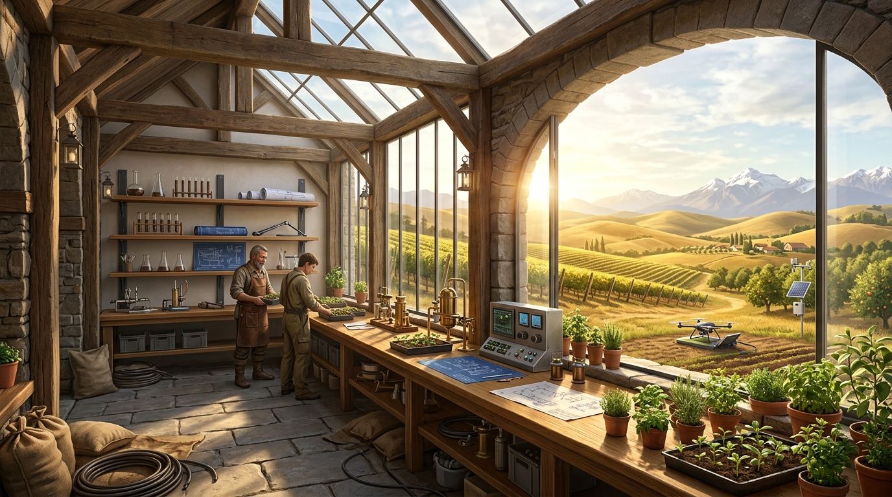
MODO 1 • GALPÓN12.8 ha
🏡 El Galpón (Fundo 3D)Keyline & IoT
Visor 3D WebGL con mallas procedurales, tranques Keyline, curvas de nivel y red de 15 sondas FDR.
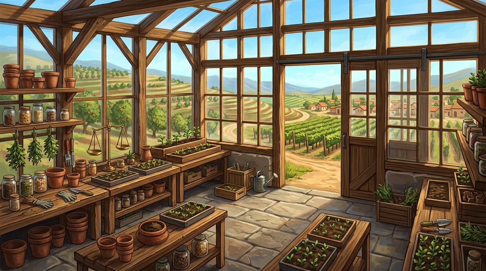
NUEVO • CULTIVOSIntercropping
🌿 Invernadero & ExterioresBiopreparados
Ficha botánica planta a planta, huertos frutales exteriores, viñedos, calendario biodinámico y recetas limpias.
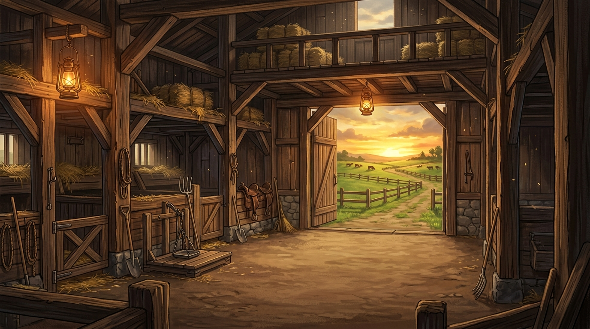
NUEVO • ESTABLOPRV 8 Potreros
🐂 Establo & Pastoreo VoisinRFID & SAG
Manejo ganadero multiespecie, pesaje, curvas de forraje MS, ciclado de bosteo y botiquín preventivo.
🌲 ECOSISTEMA, CUENCA & COMUNIDAD• Territorio Maule Sur
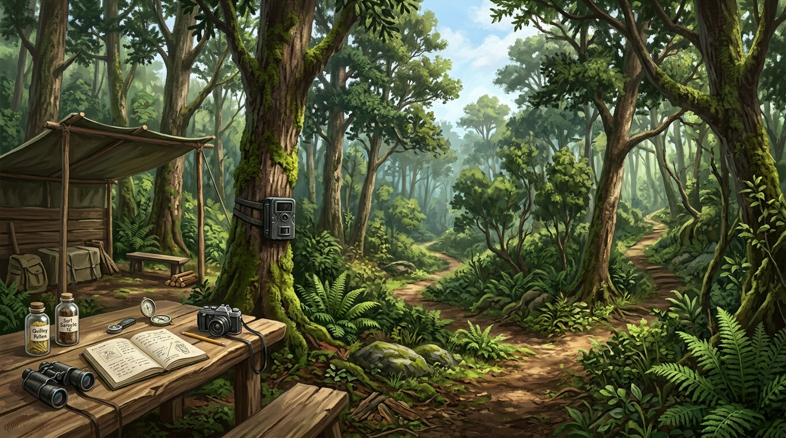
NUEVO • INCURSIÓNRewilding Suite
🧭 Incursión a Campo9 Protocolos
Visor dentro del bosque: pruebas VESS de suelo, cámaras trampa, transectos de canopia y biofonía.
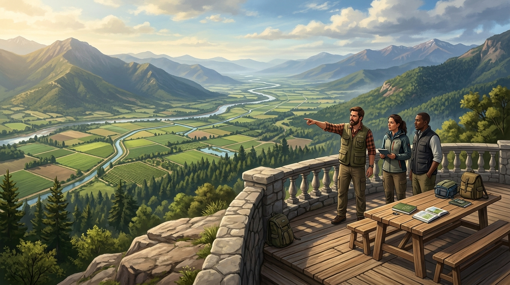
MODO 5 • CUENCA122.070 ha
🏔️ Cumbre del CerroRío Longaví
Mirador panorámico, dinámica de crecidas T=10/50/100, estrés evaporativo TWI y alertas FWI.
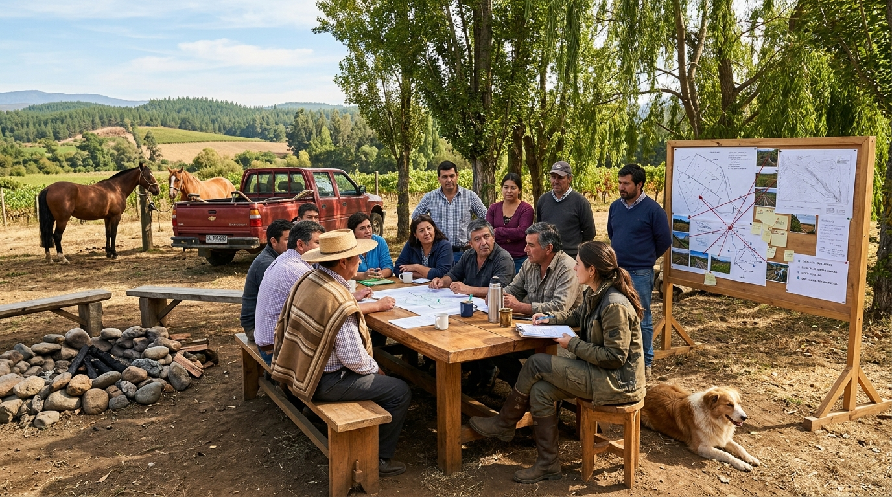
MODO 6 • COMUNIDAD10 Predios
🤝 Mesa Vecinal DAO508 ha
Espacio de diálogo y gobernanza: faja cortafuegos de 45m, tranque amortiguador de 18.500 m³ y votaciones.
🐝
PANAL CATÁN
11 Hexágonos • Núcleo Meniel al Centro
El Panal de Intercambio Vecinal & Cuenca
Visualización de flujos biofísicos de agua, biomasa, energía solar y forraje entre Fundo Meniel y la corona de 7 vecinos contiguos.
🎛️ Centro de Control del Hub: Módulos & Herramientas Unificadas
Selecciona una herramienta por categoría o utiliza los accesos rápidos ejecutivos.
6 Módulos Transversales
Monitor multi-predial, sondas FDR y mapas de cuenca.
Generación de informes de dos páginas y catastro legal.
Debate de 18 expertos y simuladores interactivos de aprendizaje.
Accesos Rápidos:
Nivel 3 • Gobernanza & Cuadro de Mando
• Macro-Cuenca Maule Sur (122.070 ha)
🏛️ Cockpit del Tomador de Decisiones
Monitor unificado de telemetría multi-predial, balance hídrico, piro-resiliencia canónica Van Wagner y ejecución presupuestaria de proyectos territoriales.
🌳
Axioma de Gobernanza Canónica
• Principio Árbol
Arquitectura Tronco (Suite Hub) y Ramas Soberanas Desacopladas
El visor de predio (Predio Twin), el de vecinos (Mesa Vecinal) y el de cuenca (Cerro Longaví) operan como ramas independientes sin redirecciones directas cruzadas. Todo dato y cambio de contexto se gestiona y conmuta a través del Tronco Hub.
Mosaico Catastral10 Roles SII
508.0 ha
10 predios contiguos bajo esquema de ordenamiento biofísico y trazabilidad digital.
Cobertura: 100% GeoJSON42 operarios
Reserva Hídrica AlmacenadaTranque Keyline
18.500 m³
Caudal Río Longaví: 124.5 m³/s • 5 Comités APR con napas estables.
Amortiguación Pico: 4.2%Autonomía: 48 días
Piro-Riesgo (Van Wagner)FWI 24 • BAJO
24.0 FWI
Fajas cortafuego de 45m: 9/10 firmados (90%) sobre 28 km de frontera.
Viento Puelche: 38 km/hAtenuación: 92%
Obras Territoriales & DAOGORE / FNDR
$420M CLP
Avance promedio de cartera: 72% • Quórum DAO: 78% activo.
4 Obras en ejecuciónVoto Cuadrático C=V²
📋 Matriz Comparativa de los 10 Predios
Estado comparativo de humedad edáfica, piro-riesgo individual, estado de cortafuegos y derechos de agua.
Predio
Rol SII
Área (ha)
Bioma / Cultivo
Humedad Suelo
FWI Local
Faja Cortafuego
Derechos DGA
Acción
🚨 Protocolos de Contingencia & Alerta Temprana
En Línea
🔥
Condición Puelche (Viento ESE > 35 km/h)
Frente de fuego potencial en ladera andina (Pino Insigne). Se mantiene activa la faja de 45m de Fundo Meniel como buffer crítico de contención.
🌊
Crecida Fluvial Longaví (Umbral T=50: 345 m³/s)
Caudal actual: 124.5 m³/s (Nivel Seguro). Tranque Keyline habilitado con capacidad libre de 8.200 m³ para absorción de pulsos torrenciales.
🤝
Gobernanza Vecinal & Smart Contracts
9/10 propietarios han depositado su firma digital en el pacto de servidumbre mutua. Próxima asamblea programada en Fundo Meniel.
📜 Previsualización del Informe Integrado Multi-Escala
MRV v2.4
Generando consolidado multi-escala...
Canva Report Studio • Módulos Vivos
• Ensamblador de Informes Oficiales Multi-Escala
Seleccione los módulos territoriales para componer su informe ejecutivo. La vista previa se actualiza instantáneamente con datos en vivo.
Plantillas Rápidas:
🛠️ Herramientas Disponibles (10)
6 Activas
📑 Portada & Metadatos Oficiales
Cabecera
Folio, fecha de expedición, georreferenciación SIRGAS y validación criptográfica.
🗺️ Catastro de los 10 Predios
508 ha
Tabla de roles SII, propietarios, superficies y biomas Gemini asignados.
💧 Balance Hídrico & Tranque Keyline
18.500 m³
Capacidad de embalse, caudal río Longaví (124.5 m³/s) y amortiguación de crecidas.
🔥 Piro-Resiliencia & Viento Puelche
FWI 24
Modelación de combustible fino FFMC, sequía BUI y velocidad de propagación.
🚰 Seguridad de 5 Comités APR
Napas
Monitoreo de pozos profundos, cotas piezométricas y consumo de 3.420 familias.
🛠️ Obras Comunitarias de Borde
Inversión
Faja cortafuegos de 45m, compuertas telemétricas y pastoreo rotativo PRV.
⚡ Scripts & Modelos Matemáticos
FAO-56 / FWI
Ecuaciones validadas de evapotranspiración, balance hídrico y curvas SCS-CN.
🤝 Gobernanza & Votación Cuadrática
DAO Maule
Pactos de servidumbre, asignación de créditos de voz y acuerdos vinculantes.
🌿 Auditoría MRV & Créditos Carbono
4.6 t CO₂e
Monitoreo satelital NDVI, materia orgánica en suelo y certificación verificable.
✍️ Decreto & Panel de Firmas
SHA-256
Resolución legal, timbres institucionales y rúbrica criptográfica de las partes.
Consejo Asesor Territorial & Cámara de Deliberación
Voces expertas multidisciplinarias nacidas de cada instancia del territorio. Aquí conversan y deliberan fraternalmente para alcanzar acuerdos sabios y equilibrados sin interrupciones.
Selecciona una rama para enfocar su terna de 3 asesores o explora el carrusel completo de los 18 sabios territoriales. Haz clic en cualquiera para ver su ficha y consultarlo.
Filtro:
MESA DE DIÁLOGO
🗣️ Cámara de Deliberación de los 18 Asesores
Ante cada desafío del territorio, los asesores conversan fraternalmente para alcanzar acuerdos sabios y equilibrados.
Escenario:
🤝
Dictamen de Consenso
Síntesis Unificada de los 18 Asesores
Nivel de Acuerdo:100% Consenso
🌿 SERVICIOS ECOSISTÉMICOS
ESTÁNDAR CICES v5.1
MATRIZ DE LOS 3 MOMENTOS
Matriz de Servicios Ecosistémicos & Bienestar Territorial
Cuantificación serena y rigurosa de los beneficios de la naturaleza: provisión de alimentos, regulación de microclima y agua, soporte del suelo y valores culturales para las comunidades del Maule Sur.
📍 Fundo Meniel (12.8 ha)•🤝 10 Predios Vecinales•🏔️ 122.000 ha de Cuenca
✓ Matriz CICES v5.1 Calibrada
BENEFICIOS VIVOS
Matriz Territorial de Servicios Ecosistémicos
Cuantificación serena de los dones de la tierra: alimento, abrigo, agua pura y comunidad en armonía.
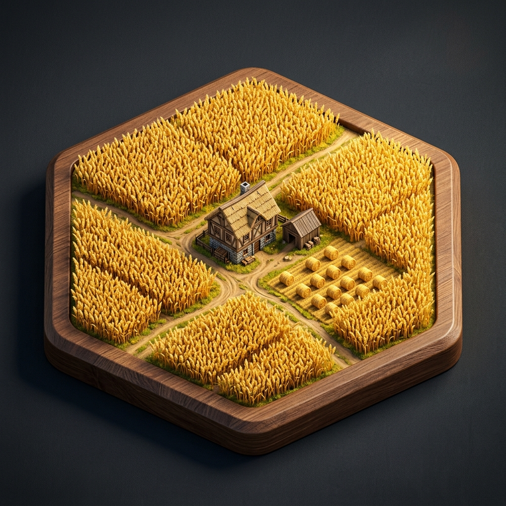
Provisión
Alimento & Energía
Lo que la tierra nos regala directamente para sustentar la mesa y el calor del hogar: forraje verde, leña seca, miel y sol.
Forraje Polifítico:8.200 kg MS/ha
Madera Limpia:140 m³/ha
Solar Meniel:78.4 kWh/d
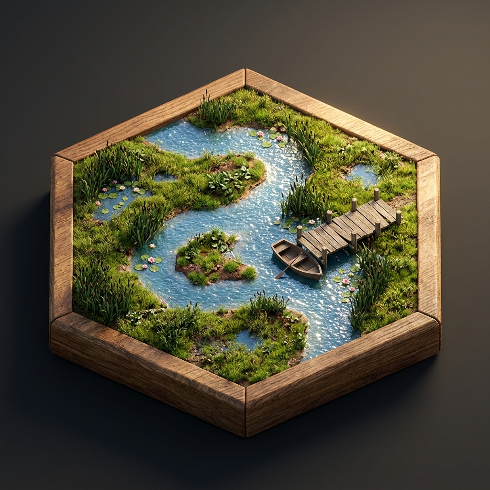
Regulación
Agua Pura & Protección
La sabiduría de la naturaleza amortiguando lluvias torrenciales, reteniendo humedad en el suelo y frenando el viento seco.
Infiltración Keyline:8.4 L/s continuo
Tranque Meniel:18.500 m³
Faja Cortafuegos:-78% propagación
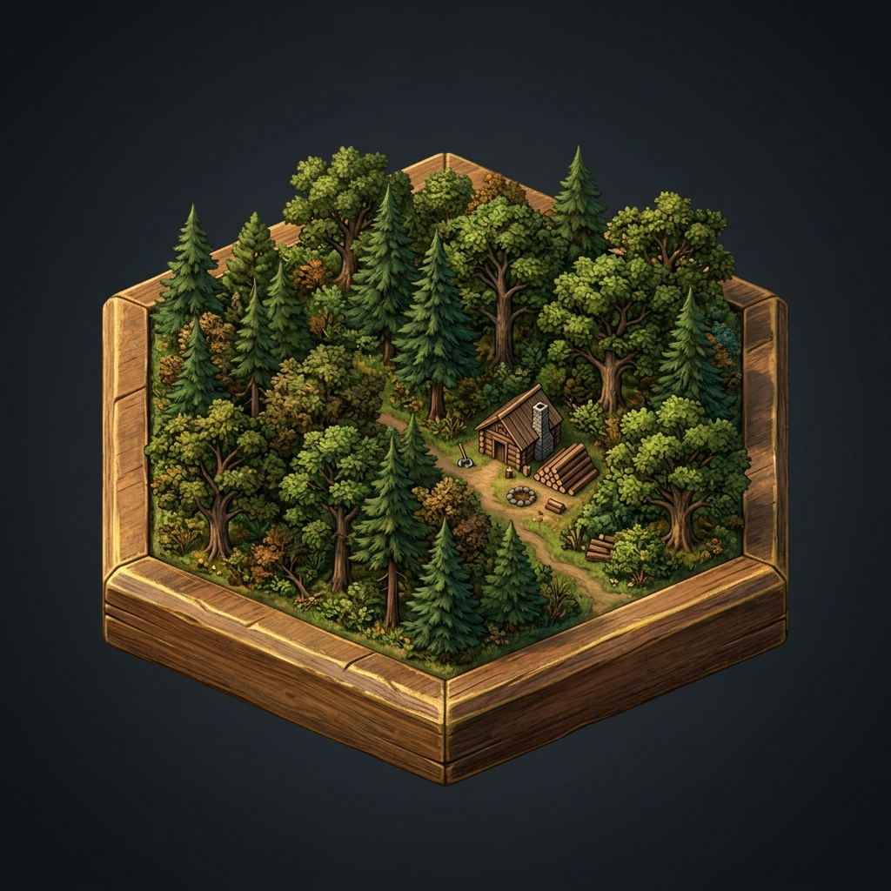
Soporte
Suelo Vivo & Biodiversidad
Procesos silenciosos que sostienen toda forma de vida: lombrices en la raíz, abejas polinizadoras y bosque esclerófilo.
Lombrices en Suelo:>120 ind/m²
Bosteo Rotativo:100% ciclaje
Corredor Ripario:84 km continuos
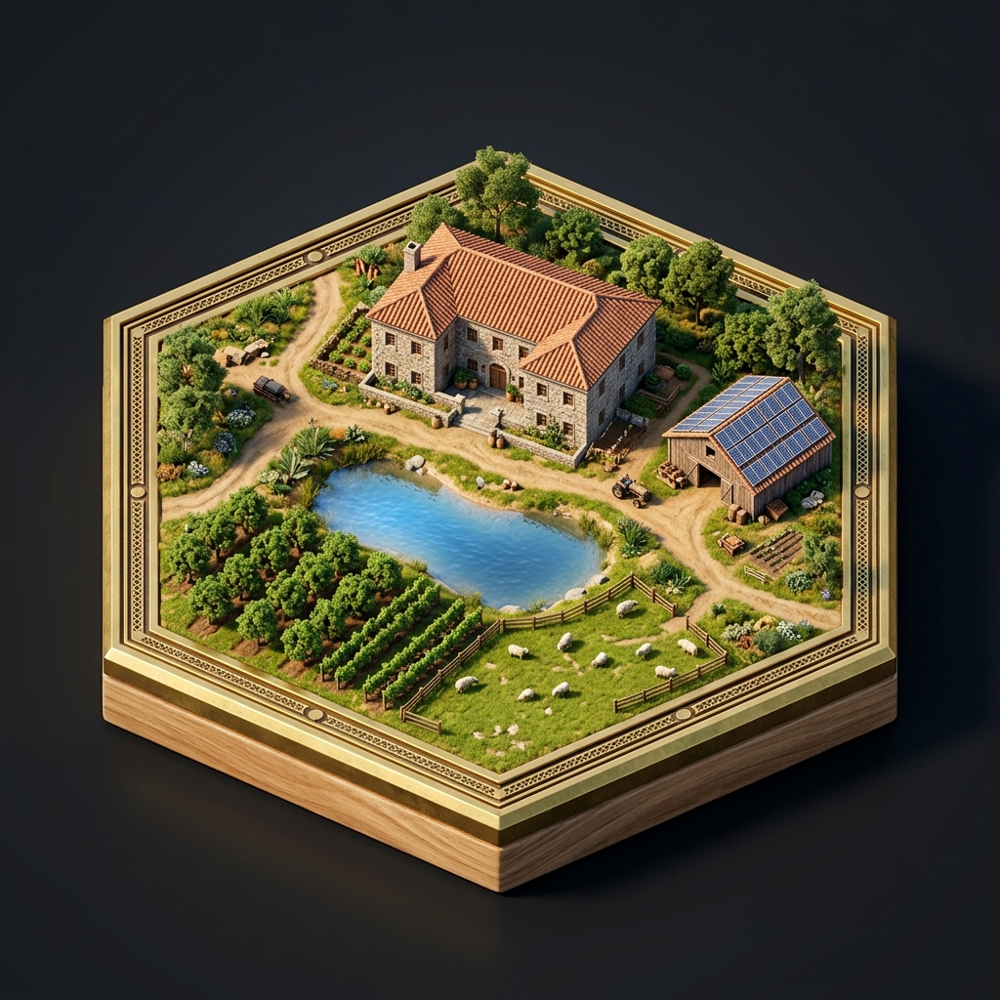
Cultural
Comunidad & Memoria
El vínculo fraterno de la gente con su tierra: la palabra empeñada en el mate, la memoria de los abuelos y la paz vecinal.
Quórum Vecinal:78% activo (DAO)
Servidumbres:9/10 predios (90%)
Memoria Oral:80+ años historia
📋 CATÁLOGO DE 22 SERVICIOS ECOSISTÉMICOS • VALORIZACIÓN BIOFÍSICA & SOCIAL
Beneficios Evitados: $385.000.000 CLP / año
Escala / Twin
Categoría
Servicio Ecosistémico
Indicador Esencial
Beneficio al Hogar & Comunidad
Valor Evitado / Año
Asesor Garante
📄 EXPEDIENTE EJECUTIVO
FORMATO OFICIAL IMPRIMIBLE
Informes Ejecutivos & Dossier de Dos Páginas
Documentación consolidada lista para entrega formal a propietarios campesinos, comités de agua potable rural (APR), juntas de vecinos y entidades públicas o de financiamiento.
DOCUMENTO OFICIAL
📄 Informe Ejecutivo de Dos Páginas
Formato estructurado de alta legibilidad, listo para ser entregado a la familia campesina, la junta de vecinos o descargado en PDF.
AGROTWIN MASTER SUITE • PÁGINA 1 DE 2
Balance Territorial de Servicios Ecosistémicos
Cuenca Hidrográfica Río Longaví • Sistema Meniel-Colliguay • Maule Sur
FOLIO: AT-2026-18E-01
29 de Septiembre, 2026
● Válido por 6 Twins (Ecosistema Completo)
1. Provisión & Sustento Familiar:
Forraje regenerativo de 8.200 kg MS/ha. 140 m³/ha de madera curada y 78.4 kWh/d de cosecha solar con 4.2 kWh inyectados a vecinos.
2. Regulación Hídrica & Fuego:
Infiltración Keyline continua de 8.4 L/s que recarga 5 APRs. Tranque de 18.500 m³ y fajas verdes que frenan 78% de pavesas.
3. Suelo Vivo & Ecosistemas:
>120 lombrices/m² y 100% reciclaje de nutrientes por bosteo. Corredor biológico de 84 km continuos de Peumo y Quillay.
4. Gobernanza & Confianza Común:
88% de índice de confianza vecinal con cero litigios. 9 de 10 servidumbres inscritas y 80+ años de memoria oral campesina.
Valor Social y Económico Anual Evitado
Servicio Ecosistémico
Métrica Física
Beneficio Tangible
Ahorro Evitado / Año
Infiltración Keyline Recarga APRs
8.4 L/s continuo
Seguridad hídrica para 1.450 familias de comités de agua potable
$28.500.000 CLP
Cosecha & Retención en Tranque Meniel
18.500 m³ útiles
Laminación de crecidas pluviales y amortiguación de estiaje estival
$34.000.000 CLP
Faja Cortafuego Comunitaria 45m
2.400 m lineales
Protección de 10 viviendas campesinas contra incendios de copa
$125.000.000 CLP
Pastoreo Racional Voisin & Compost
8 Potreros PRV
Sustitución 100% de fertilizantes sintéticos y aumento de humedad
$18.400.000 CLP
Fuente: Modelo Biofísico AgroTwin v2.4Página 1 de 2 • Continúa en siguiente página ➔
AGROTWIN MASTER SUITE • PÁGINA 2 DE 2
Dictamen & Compromisos de los 18 Asesores
Recomendaciones Vinculantes para el Hogar, Establo, Invernadero, Excursión, Vecindad y Cuenca
SESIÓN: PLENARIO-18
Acuerdo Unánime (6 Twins)
1. Nivel Predio / Galpón • Infraestructura & Hogar (Meniel)
Don Belisario • Maestra Laura • Ing. Rodrigo
Hogar & Madera: Aleros sellados con malla de cobre contra pavesas y faja limpia de 15 m alrededor del galpón.
Energía & Microrred: Cosecha solar de 78.4 kWh/d con 30 kWh de reserva y 4.2 kWh/d de excedente transferible.
Suelo & Keyline: Mantener canales de contorno y cobertura viva para retención hídrica pasiva.
2. Nivel Invernadero • Biofábrica & Germoplasma
Ing. Soledad • Doña Carmen Gloria • Ing. Rodrigo
Biofábrica: Té de compost aireado (450 µg C/g) y Bokashi maduro a 55°C para nutrición foliar y radicular sin pesticidas.
Semillas Criollas: Resguardo de 28 ecotipos campesinos con 94.2% de germinación y tolerancia térmica +2.5°C.
Clima Solar: Aperturas cenitales domóticas a 12V y nebulización térmica con amortiguación delta de 8.2°C off-grid.
3. Nivel Establo • Ganadería PRV & Bienestar SAG
Dra. Javiera • Don Gastón • Ignacio Subercaseaux
Sanidad SAG: Trazabilidad DIIO 100%, coprología McMaster bajo 100 HPG y desparasitación natural sin ivermectinas.
Pastoreo PRV: Carga instantánea de 180 UGM/ha/d, 44 días de reposo biológico y rotación con gallinero móvil.
Coexistencia Silvestre: Perros protectores Mastín del Pirineo y 6 unidades Foxlights, logrando 0% de pérdidas de ganado.
4. Nivel Excursión • Rewilding & Suelo Vivo
Dr. Gonzalo • Ignacio Subercaseaux • Dr. Marcelo
Suelo & Calicatas: Infiltración de 185 mm/h en calicata de rewilding, 6.8% MO en horizonte A y 44.5 t C/ha secuestradas.
Monitoreo Fauna: Red de 8 cámaras trampa en quebradas con registro de güiñas, chingues y quiques con 96.4% precisión.
Bioindicadores: 48% de cobertura de líquenes Usnea y 22.4 m³/ha de necromasa activa alimentando la microbiología.
5. Nivel Vecinal • Acuerdos Comunitarios & Gobernanza DAO
Dra. Camila • Mg. Patricia • Don Silvestre
Turnos de Riego: Don Silvestre supervisa acumulación nocturna en tranque Meniel y entrega en pulsos presurizados diurnos.
Fondo Asociativo CNR: Carpeta técnica Ley 18.450 con 85% de subsidio para tranque asociativo con los 10 roles cadastrados.
Faja de Fuego & Mingas: Mantenimiento colaborativo de la faja de 45m comunitaria (28 km perimetrales) para blindaje del valle.
6. Nivel Cuenca • Macro-Hidrología & Piro-Resiliencia
Dr. Fernando • Dra. Natalia • Dr. Marcelo
Laminación Fluvial: Amortiguación de crecidas T=50 años en tranques prediales, reduciendo 18% del pico hacia los caminos.
Alerta Puelche: Activación preventiva con modelo FWI Van Wagner 48h antes de eventos Foehn con ráfagas >50 km/h.
Corredor Ripario: Continuo de 84 km de bosque esclerófilo y biofiltros de totoras con 94% de retención de nitratos.
Firma de Conformidad de los 18 Asesores Facilitados con IA (6 Garantes Territoriales)
Don Belisario / M. Laura / R. Bustamante Garante Predial & Galpón
Ing. Soledad / C. Uribe / R. Bustamante Garante Invernadero
Dra. Javiera / Don Gastón / I. Subercaseaux Garante Establo & PRV
Dr. Gonzalo / I. Subercaseaux / Dr. Marcelo Garante Excursión
Dr. Fernando / Dra. Natalia / Dr. Marcelo Garante Cuenca & Cerro
Documento emitido y validado digitalmente por AgroTwin Suite (6 Twins • 18 Asesores)Página 2 de 2 • Fin del Dossier
🎮 DINÁMICAS DIDÁCTICAS VIVAS
PRINCIPIO ÁRBOL & CATÁN RURAL
Juegos Didácticos: Aprende la Dinámica Detrás de AgroTwin
Explora y comprende de manera lúdica e interactiva los equilibrios ecológicos, la sincronización entre el predio, los vecinos y la cuenca, y los modelos biofísicos del territorio.
SIMULADORES DIDÁCTICOS VIVOS
🎮 Juegos: Comprende la Dinámica Detrás de AgroTwin
Aprende jugando cómo opera el ecosistema de la plataforma: la arquitectura del Principio Árbol (Tronco & Ramas), el gemelo biofísico del Predio (Keyline & PRV), la defensa comunitaria de Los Vecinos (La Mesa) y el balance hídrico de La Cuenca (El Cerro).
🏆 Puntos de Resiliencia: 100
🌳
Simulador de Arquitectura: Tronco Central vs. Ramas Autónomas
REGLA FUNDAMENTAL DE AGROTWIN
Salud Sistémica: 100% Óptima
El Tronco es la Suite (Hub Central). El Predio (12.8 ha), los Vecinos (508 ha) y la Cuenca (122k ha) son sus tres ramas. Cada rama es autónoma e independiente, pero se comunican con las demás exclusivamente a través del Tronco. Nunca deben existir redirecciones directas entre ramas.
🏡 Rama Predio ACTIVA
⮀
🏛️ TRONCO: SUITE HUBBus Central • 18 Asesores • Telemetría
⮀
🤝 Rama Vecinos
🏔️ Rama Cuenca
⚡ Evento Territorial Activo:
🔥 Alerta Roja: Viento Puelche genera foco de fuego en Forestal Los Pinos (Vecino Oeste)
Ráfagas de 55 km/h empujan pavesas hacia el límite del Fundo Colliguay. El sensor térmico LoRaWAN marca FWI 82. ¿Cómo gestionas el flujo de datos y respuesta?
Elige tu acción arquitectónica en la plataforma:
👉 Selecciona una opción para poner a prueba si comprendes el Principio Árbol de AgroTwin.
Comprende lo que hace el visor 3D del predio: no usamos bombas fósiles ni dejamos al ganado sobrepastorear. Usamos las curvas de nivel para guiar el agua de lluvia hacia las lomas y rotamos animales respetando el Punto Óptimo de Reposo del forraje.
💧 Humedad Suelo (FDR)36.5%
🌊 Tranque Keyline15.200 m³Capacidad: 18.500 m³
🌾 Altura Forraje (PRV)18 cmPunto Óptimo: 16-20 cm
⚡ Carbono en Suelo2.6 tCO2e/haAcumulación Viva
Acciones de Manejo Regenerativo:
👉 Haz clic en una acción para experimentar cómo el diseño Keyline y el pastoreo Voisin mantienen verde el fundo todo el año.
🤝
Simulador Vecinal: El Dilema del Viento Puelche & Bio-Cortafuegos
DINÁMICA COMUNITARIA DE LA MESA
Piro-Riesgo FWI: 82 Crítico
Comprende por qué existe la Mesa de Vecinos: el fuego y la sequía no respetan alambrados. Si la plantación forestal vecina tiene combustible acumulado, el predio agroecológico se quema si no cooperan.
🚨 SITUACIÓN: Viento Puelche a 58 km/hHumedad Aire: 12% • Combustible Fino Seco
El vecino Forestal Los Pinos reporta un foco a 800 metros. Las chispas vuelan hacia las parcelas agrícolas. ¿Cómo actúa la comunidad?
👉 Activa las medidas cooperativas y haz clic en "Evaluar" para comprobar si el bio-cortafuegos salva el valle.
🏔️
Simulador de Cuenca: Cabecera Andina, Embalse Bullileo & Río Longaví
DINÁMICA MACROTERRITORIAL DE EL CERRO
Seguridad Hídrica: 86% Estable
Comprende por qué el gemelo digital mira la cuenca completa: el agua del tranque predial viene de los deshielos andinos. Si no regulamos la cuenca con visión solidaria, las crecidas invernales rompen canales y las sequías de verano dejan sin agua al secano.
👉 Elige una estación climática para ver cómo la cuenca alimenta de datos al Hub y permite planificar la siembra en el predio.
📟
Mini-Juego Tutorial: Cablea tu Estación Agroclimática ESP32
DESAFÍO EDUCATIVO • DE LA TEORÍA AL CAMPO
Precisión de Circuito: 100% Sin Cortocircuitos
Aprende la electrónica de campo mientras juegas: un error de voltaje quema el sensor de 40 USD o apaga la bomba de agua. Sigue las instrucciones paso a paso, conecta cada cable al pin correcto y prueba el circuito inyectando telemetría viva.
👉 Selecciona los cables en orden según la instrucción del tutor para completar el circuito sin quemar componentes.
👨🏫 Tutor de Campo: Paso a Paso
MOMENTO 3 • LA MESA DE VECINOS| 10 Predios • 508 ha • Maule Sur
Gobernanza: DAO Rural Maule•Voto: Cuadrático C=V²•Quórum: 78% Activo
MOMENTO 3 • MESA VECINALASAMBLEA RURAL MAULE SUR
10 Predios • 508 ha Comunales
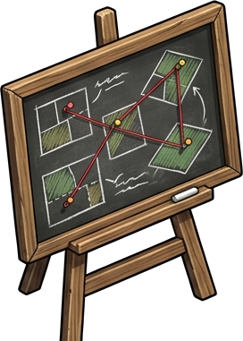
🐝 Pizarra: El Panal
11 Nodos • Bio-Flujos
OBJ-MESA-0111 HEXÁGONOS • BIO-FLUJOS
El Panal: Topología de Intercambio Vecinal
Mapeo dinámico de flujos capilares entre el Fundo Meniel y sus vecinos: excedentes solares FV, agua de tranque y biomasa podada.
▶ Clic para abrir pestaña PanalMenú Asamblea
📜 Fuentes & Títulos
CBR • DGA • SII • Satélite
OBJ-MESA-02FUENTES OFICIALES & TÍTULOS
Fuentes Oficiales, Títulos de Predio & Pactos
Mapeo integral de procedencia de datos (CBR, SII, DGA, CIREN, Copernicus, INIA) y paneles rellenables de títulos catastrales para erradicar alucinaciones.
▶ Clic para abrir Fuentes & TítulosMenú Asamblea
💼 Maletín de Métodos
DRP • Mediación Comunitaria
OBJ-MESA-03CIENCIAS SOCIALES RURALES
Metodologías de Diálogo & Trabajo en Comunidades
Guía probada para profesionales de ciencias sociales y extensionistas: Diagnóstico Rural Participativo (DRP), mapeo de actores de agua y resolución de conflictos.
▶ Clic para abrir pestaña MaletínMenú Asamblea
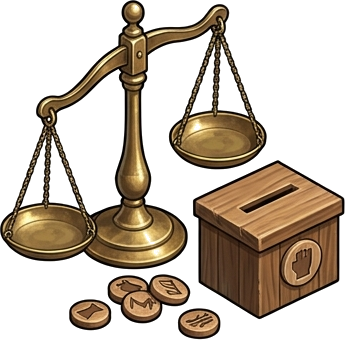
⚖️ Sistema de Votos
Voto Cuadrático C=V²
OBJ-MESA-04VOTO CUADRÁTICO
Balanza de Votos & Gobernanza Vecinal
Sistema ponderado de 100 Créditos de Voz por predio. Voto cuadrático C = V² para priorizar acuerdos de compuertas, faja cortafuegos y repetidor LoRa.
▶ Clic para abrir pestaña VotosMenú Asamblea
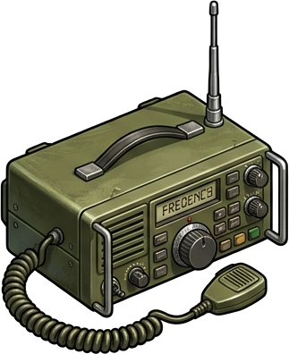
📻 Radios Online & VHF
Streaming Maule • 146.520
OBJ-MESA-05STREAMING & VHF
Radios Online del Maule Sur & Frecuencia VHF
Sintonizador en vivo de emisoras locales (Radio Ancoa Linares, FM+ Maule, Radio Marisol, Guza FM) más despacho de emergencia por VHF 146.520 MHz.
▶ Clic para abrir pestaña RadioMenú Asamblea
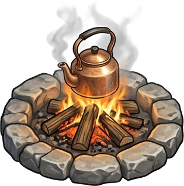
🔥 Actas de Asambleas
5 Actas • Turnos & Riego
OBJ-MESA-06HISTORIAL DE ACTAS
Fogata de Acuerdos & Actas de Reuniones
Registro oficial de sesiones de la asamblea vecinal: acta de turnos de canal de riego, protocolo de apertura de vertederos y faja cortafuegos.
▶ Clic para abrir pestaña ActasMenú Asamblea
Predio Representado:
ASAMBLEA RURAL MAULE SUR
| 10 Predios • 508 ha Comunales
Instrumento Diegético
📍
Locaciones & Predios en la Mesa de Debate
Selecciona un predio para activar su Maletín Predial en la asamblea o presiona "Volar en Mapa" para inspeccionar su geometría en GIS:
10 Predios Conectados • 508 ha
🏡Rol 142-88
Fundo Meniel
24.8 ha • PRV & Keyline
🌾Rol 142-12
Agrícola San José
68.4 ha • Arroz & Crecidas
🌲Rol 143-05
Fundo Los Boldos
112.5 ha • Forestal Pino
🚜Rol 138-20
Retiro Poniente
84.0 ha • Trigo & Avena
🍇Rol 140-15
Santa Lucía
36.2 ha • Arándanos & Mora
🫐Rol 141-02
Mora Verde
28.0 ha • Berries Orgánicos
🌳Rol 144-01
Los Maitenes
55.0 ha • Bosque & Miel
🍐Rol 144-22
Don Víctor
18.5 ha • Frutales & Tranque
🍷Rol 145-10
Viña El Carmen
38.0 ha • Uva Torontel
⛰️Rol 146-01
Reserva La Palma
150.0 ha • Cabecera Andina
🎒
Maletín Predial del Agricultor
Extracción AgriTwin 1 • Métricas Clave
Rol 418-24 Parral
✅Predio Piloto Fundo Meniel • Calibración en terreno
Métricas biofísicas individuales que el productor pone sobre la mesa para justificar inversiones compartidas o derechos de agua:
Crecida invernal amortiguada por infiltración Keyline y terrazas de escorrentía en laderas altas.
🏔️ Embalse Bullileo (Cabecera)
Cota 540m
78.5%47.1M m³Capacidad: 60.0M m³
Volumen disponible para temporada de riego estival. Válvula de desagüe de fondo en operación normal (4.2 m³/s).
🔥 Piro-Riesgo FWI & Viento Puelche
CONAF / DMC
24ModeradoViento: 38 km/h Este
FFMC (Combustible): 89 (Seco)
Humedad Relativa: 22%
💧 Red Pozos APR (5 Comités)
3.220 Familias
APR Las Rosas+1.8m (Nivel Freático -12.4m)
APR Meniel RuralEstable (-14.2m)
APR La Quinta+1.2m (Recuperación)
APR San José+0.9m (-15.1m)
APR VillasecaSupervisado (-16.1m)
🔭 6 PUNTOS CLAVE DE MONITOREO
Clic para volar
📐
Borde Sistémico • Fundo Meniel
Rol SII 142-88 • 24.8 ha • Caudal DGA 28 L/s
Infiltración: 42k m³/año
Pactos: 3 Activos
🏔️
Instrumento Diegético
🔭
Locaciones Estratégicas de la Cuenca (Vistas Predefinidas)
Puntos neurálgicos de monitoreo en la cuenca. Haz clic en cualquiera para volar inmediatamente en el visor cartográfico:
6 Puntos Clave • Cota Alta a Valle
🏡
Fundo Meniel (Keyline)
Núcleo
Punto cero de infiltración subsuperficial: Tranque Keyline de 18.500 m³, 15 sondas FDR y barrera verde cortafuegos.
Coords: -36.2115, -71.6053•Zoom 15
🏔️
Embalse Bullileo
Cabecera
Capacidad máxima de 60M m³: principal regulador cordillerano de la cuenca del Río Bullileo y afluente del Longaví.
Coords: -36.2800, -71.4200•Zoom 13
🏛️
Parral Centro
Urbano
Nodo urbano densificado y confluencia de canales matrices de riego: 42.000 habitantes en zona de baja cota.
Coords: -36.1432, -71.8267•Zoom 14
🌾
Retiro Pueblo
Valle APR
Corazón del valle cerealero: monitoreo de napas freáticas de los 5 Comités de Agua Potable Rural (APR) y cultivos de arroz.
Coords: -36.0500, -71.7667•Zoom 14
🗺️
Vista General Cuenca
122k ha
Perspectiva completa de la macro-cuenca Maule Sur: gradiente desde la alta cordillera andina hasta los llanos de secano interior.
Coords: -36.1300, -71.6500•Zoom 11
🌊
Río Longaví Crossing
Crecidas T=50
Estación fluviométrica DGA Quilaimo: simulación de áreas de anegamiento fluvial y amortiguación por Keyline y esteros.
Coords: -36.1800, -71.6400•Zoom 14
💧Río Longaví
Dinámica Hídrica & Crecidas
Caudal real 124.5 m³/s, tiempo de concentración tc=6.2h, batimetría Bullileo y amortiguación por tranques Keyline.
🔥Viento Puelche
Piro-Riesgo FWI & Cortafuegos
Índice FWI 24 (Bajo hoy), combustible fino FFMC, simulador Rothermel de frente de llama y franjas limpias de 45m.
📡Red Centinela
Estaciones DMC / INIA & APRs
5 boyas agrometeorológicas terrestres enlazadas a 5 comités APR (3.220 familias) para alerta temprana de sequía y abatimiento.
Digital Twin Macro-Cuenca • 122.070 ha
Modelo Hidro-Piro Dual
⚡ Simulador Táctico de Cuenca & Laboratorio de Crecidas
Modelación paramétrica del balance hídrico del Río Longaví, embalse cordillerano Bullileo (60M m³),
onda de crecida con amortiguación Keyline (-22.4%) y comportamiento del fuego Rothermel ante Viento Puelche.
🎯Botonera 1-Click • 8 Momentos Climáticos & Escenarios de Cuenca:
Alternar escenario instantáneamente:
Caudal Río LongavíNormal
124.5m³/sPico Estación Quilaimo
Onda Mitigada:124.5 m³/s
Margen Evacuación:+2.4 h retraso
Embalse BullileoCota Segura
47.1M m³78.5%
Capacidad Total:60.0 M m³
Gasto Compuerta:32.0 m³/s
Piro-Riesgo FWIModerado
24/ 100Índice Canadiense
Avance Frente:8.5 m/min
Longitud Llama:1.8 m
Buffer Keyline 10 PrediosRecarga Activa
18.500m³-22.4% Pico
Atenuación Crecida:Aplanamiento Onda
Sedimento Retenido:142 ton/evento
📈
Hidrograma Dinámico de Crecida Río Longaví (T = 0 a 48 Horas)
Modelación de la onda de escorrentía con factor de fusión por cota de isoterma 0°C y atenuación hídrica por tranques Keyline.
Onda Sin Mitigar
Onda con Keyline
Volumen Infiltrado
Umbral Desborde (345 m³/s)
Pasa el cursor sobre el gráfico para inspeccionar caudales horarios precisos.
Tiempo de concentración tc = 6.2 horas | Retardo Keyline = +2.4 horas
🎛️
Panel de Control Hidro-Meteorológico Paramétrico
Ajuste Reactivo Instantáneo
🌧️ Precipitación 24h
25 mm
0 mm (Seco)120 mm (Temporal)250 mm (Río Atm.)
❄️ Isoterma 0°C
2.100 m
1.200 m (Nieve Valle)2.200 m (Normal)3.800 m (Lluvia Cordillera)
Haz clic en cualquier predio para abrir su ficha territorial en el mapa.
Módulo Institucional & Legal B2B
Código de Aguas Art. 314
📜 Generador de Decretos & Expedientes de Gobernanza Hídrica
Emisión automática de resoluciones técnicas oficiales, alertas tempranas preventivas SENAPRED y actas de distribución
de caudales para la Junta de Vigilancia del Río Longaví, respaldadas por telemetría del Digital Twin.
🇨🇱
REPÚBLICA DE CHILE • GOBIERNO REGIONAL DEL MAULE
RESOLUCIÓN EXENTA DOH-MAULE N° 0482/2026
Cuenca Hidrográfica del Río Longaví • Sistema Bullileo • Comuna de Retiro
FOLIO: AGROTWIN-M2-2026-0927
FECHA: 27 de Septiembre de 2026
HASH: SHA256-DIGITAL-TWIN-VERIFIED
VISTOS Y CONSIDERANDO:
1. Las atribuciones conferidas en el Artículo 314 del Código de Aguas de Chile y las facultades del Director General de Obras Hidráulicas;
2. El informe telemétrico de la estación hidrológica DGA Quilaimo y la cota actual del Embalse Bullileo (47.1 M m³, equivalente al 78.5% de su capacidad útil);
3. El monitoreo de escorrentía del Río Longaví modelado por el Digital Twin Cuenca Maule Sur, registrando un caudal regulado de 124.5 m³/s;
RESUELVO (RÉGIMEN OPERACIONAL DE ENTREGA):
• Tasa de Entrega Canales Matrices: Se fija en 0.82 L/s por acción para los canales de la margen derecha e izquierda de Retiro.
• Compuerta de Fondo Embalse Bullileo: Apertura máxima fijada en 25% (32.0 m³/s de erogación continua).
• Prioridad de Abastecimiento Humano: Reserva prioritaria intangible de 120 L/s para los 5 comités APR de la comuna de Retiro (3.220 familias).
Comuníquese a la Junta de Vigilancia del Río Longaví, a la Asociación de Canalistas de Retiro y publíquese en el Diario Oficial.
Ing. Rodrigo Valenzuela R.
Director Regional Obras Hidráulicas
DOH Región del Maule
Don Alberto Meniel S.
Presidente Junta de Vigilancia
Río Longaví y sus Afluentes
[CERTIFICADO CRIPTOGRÁFICO]
Digital Twin AgriTwin Engine
Telemetría Red Centinela 9 Nodos
🐝
PANAL APPROACHNÚCLEO MENIEL11 HEXÁGONOS CONTINUOS
Topología de Flujos: Fundo Meniel (Centro) ⇄ Corona de Vecinos
🤝 Nivel Vecinal • 11 Hexágonos
Capa de Flujo:
7 Flujos Activos • 11 Nodos Conectados
🏔️Enfoque Cuenca: Visualiza el balance macro-hidrológico de la cuenca del Río Longaví y el impacto de los tranques y recargas locales.
💡 Clic en un hexágono o línea de flujo para inspeccionar
NÚCLEO MENIEL • HOGAR
Propietario al Centro
🏡
Hogar & Matriz Energética
Fundo Meniel • Residencial & Fotovoltaico
Potencia Solar:18.0 kWp
Almacenamiento:30 kWh
Consumo Base:14.2 kWh/d
Excedente Vecinal:4.2 kWh/d
Centro habitacional y neurálgico del Fundo Meniel. Concentra el sistema de generación fotovoltaica con 36 paneles solares de 500Wp, inversor híbrido trifásico y banco de acumulación en litio LiFePO4. Alimenta las bombas de impulsión de riego, telecomunicaciones LoRaWAN de las 15 sondas FDR y abastece confort térmico pasivo.
Especificaciones del Subsistema:
Generación Diurna Promedio: 78.4 kWh/día (Verano)
Autonomía en Baterías: 48 horas sin radiación directa
Gateway LoRaWAN 915 MHz con cobertura de 6.2 km sobre la cuenca
NUEVO DOSSIER INTERACTIVO•18 Láminas Luminosas + Slugs Directos
Dossier Estratégico: Teledetección Satelital, IA Biofísica & Benchmarking Global
Análisis comparativo de 11+ plataformas líderes (Kilimo, Instacrops, Pachama, Firetrace/OroraTech, Agro-Satélite CIREN/DGA, Regrow, CropX, OpenET, Hydrosat, Kayrros, eLEAF), su arquitectura de datos y la hoja de ruta transferible a AgriTwin.
ESTÁNDAR OPERATIVO C2•Módulos 1, 2, 3 y 4 Operativos•Topoclimatología & Heladas•Reserva Hídrica 342.5k m³•Radio Táctico 5 km
Estándar «Vecino Protegido» de Agrotech (Informado, Colectivo & Defensivo)
Marco de inteligencia territorial compartida y auxilio mutuo que resuelve la brecha entre la tenencia legal (Catastro SII), la física de combustibles (Sentinel-2 L2A), la reserva hídrica colectiva (18 tranques DGA/CNR) y la microclimatología catabática de heladas (Copernicus DEM 30m y piscinas de frío). Permite al agricultor planificar la defensa ante incendios, heladas radiativas y sequía con datos auditables, cuantificación explícita de incertidumbre y respaldo comunitario.
1
LULC Biofísico ≠ Catastro Legal
Al usuario no le interesa de quién es legalmente el predio vecino para evaluar si corre peligro de incendio o sequía. Separamos el procesamiento espectral puro del mosaico de roles del SII para delimitar unidades biofísicas homogéneas independientes del cerco de alambre.
Principio: El fuego, la sequía y la escorrentía no respetan deslindes notariales.
2
Filtro Antirruido (LOD Dual)
Para evitar el efecto "sal y pimienta" (150.000 micro-polígonos pixelados de 10m), aplicamos un esquema de Nivel de Detalle Espacial:
Macro-Cuenca (>5 km): Polígonos con Unidad Mínima Cartográfica MMU ≥ 50 ha suavizados con Douglas-Peucker.
Radio Táctico Local (5 km Meniel): Resolución fina MMU ≥ 1.5 ha aislando tranques y cuarteles agrícolas.
3
Estrategia de Biomasa Unificada
En verano, Sentinel-2 puede arrojar firmas idénticas entre monocultivo de pino maduro y bosque esclerófilo denso. Para garantizar >94% de certeza, se unificaron provisionalmente bajo «Biomasa Forestal Continua».
Roadmap de Discriminación: En los pasos siguientes incorporamos pendiente DEM (>18° = nativo de quebrada) y análisis de textura Canny (ortogonalidad de plantación comercial).
Catálogo de Polígonos Biofísicos Activos (Módulo 1)
Capas vectoriales integradas en el motor cartográfico de AgriTwin
13 POLÍGONOS CALIBRADOS
Clase Biofísica
Polígono Representativo
Superficie
Resolución LOD
Certeza Espectral
Vínculo Táctico / Riesgo
💧 Espejo de Agua
Tranque Acumulador Meniel
1.8 ha (18.500 m³)
Local 5 km (MMU 1.5 ha)
98% (MNDWI)
Punto de abastecimiento aéreo para brigadas y cortafuego vivo
💧 Espejo de Agua
Tranque Vecinal Los Cristales
2.4 ha (24.800 m³)
Local 5 km (MMU 1.5 ha)
97% (MNDWI)
Respaldo hídrico colaborativo en red vecinal
🌲 Biomasa Forestal
Rodal Forestal Flanco Norte
14.2 ha
Local 5 km (MMU 1.5 ha)
94% (S2 BOA)
Vulnerabilidad de interfaz WUI sobre el flanco norte de Meniel
🌲 Biomasa Forestal
Remanente Nativo Quebrada El Guindo
8.5 ha
Local 5 km (MMU 1.5 ha)
92% (S2 BOA)
Amortiguador biológico de erosión y cortafuego natural en vaguada
🌾 Matriz Agrícola
Cuarteles Cerezos & Avellanos Meniel
22.0 ha (12 ha + 10 ha)
Local 5 km (MMU 1.5 ha)
96% (S2 BOA)
Canopia densa activa; barrera verde hidratada contra fuego
🌲 Biomasa Forestal
Cinturón Biomasa Precordillera Andina
12.300 ha
Macro-Cuenca (MMU ≥50 ha)
94% (S2 BOA)
Combustible masivo continuo en corredor de viento Puelche
🌾 Matriz Agrícola
Matriz Agrícola Irrigada Cuenca Media
18.600 ha
Macro-Cuenca (MMU ≥50 ha)
96% (S2 BOA)
Amortiguador térmico de baja inflamabilidad estival
💧 Espejo de Agua
Espejo Mayor Embalse Bullileo
3.200 ha
Macro-Cuenca (MMU ≥50 ha)
99% (MNDWI)
Reserva hídrica estratégica regional (84.2 Hm³)
🛰️ Transferencia Tecnológica desde el Dossier de Teledetección
Este Módulo 1 incorpora directamente las metodologías de segmentación y detección automática analizadas en nuestro Dossier Estratégico:
Descartes Labs (Slide 2):Algoritmo de detección de bordes espectrales homogéneos para evitar el trazado manual de polígonos.
Planet Labs (Slide 1):Índice MNDWI de alta fidelidad para aislar espejos de agua sin distorsión por sombra de laderas.
🏹🔥
Módulo 2: Vectores de Amenaza Transfronteriza, Balística de Fuego & Vientos Multi-Escenario
Doctrina de Propagación Canónica (Rothermel 1972) • Teledetección de Humedad Foliar Sentinel-2 (LFMC) • Salto Balístico de Pavesas (Albini 1979)
⚔️ Fundamento Cartográfico: De la Flecha Simple al Haz Táctico Divergente
Inspirado en la cartografía militar de frentes de batalla (referencia histórica de frentes divergentes), el fuego en la interfase urbano-agrícola-forestal (WUI) no se propaga como una sola flecha recta. Cada rodal de biomasa combustible proyecta un haz de vectores que divergen a lo largo del frente de contacto. La flecha central de cabeza concentra la mayor probabilidad y velocidad lineal, mientras que los flancos se abren en abanico y las pavesas aerotransportadas saltan cortafuegos hacia adelante.
🌪️ 1. Los 4 Regímenes Eólicos del Territorio Maule Sur (No solo Puelche)
El viento Puelche es la condición más devastadora pero no la única que gobierna la cuenca. El motor biofísico evalúa la balística bajo 4 escenarios meteorológicos deterministas:
Régimen Eólico
Dirección / Forzante
Velocidad / HR
Humedad Foliar (LFMC)
Avance (R)
Sector Vulnerable en Meniel
🌪️ Puelche Catabático
ESE (120°) → WNW
42 km/h • HR 14%
62% (Crítico <80%)
18.4 m/min (1.1 km/h)
Deslinde Este (Colindancia directa <15 min)
🌬️ Surazo Estival
SSW (205°) → NNE
24 km/h • HR 44%
78% (Alerta Media)
10.2 m/min (0.6 km/h)
Deslinde Sur & Potreros PRV (Franja Bullileo)
🧭 Norte Pre-Frontal
NNW (340°) → SSE
28 km/h • HR 36%
71% (Alerta)
12.7 m/min (0.8 km/h)
Deslinde Norte & Cuarteles Frutales
📡 Tiempo Real SDSS
Dinámico (Sensores IoT)
Estación DGA/Meniel
Sensor In-Situ
Cálculo Horario
Reevaluación continua con cada ráfaga
📐 2. Modelo Físico Acoplado de Propagación de Frentes (Rothermel & Huygens)
Ecuación Canónica de Velocidad de Propagación de Cabeza ($R_{\text{head}}$):
Donde $I_R$ es la intensidad de reacción térmica del combustible fino (MJ/m²·min); $\xi$ es el flujo de propagación propagante; $\Phi_w = C \cdot U_{\text{midflame}}^B \cdot (\beta/\beta_{\text{op}})^{-E}$ es el coeficiente acelerador del viento; $\Phi_s = 5.275 \cdot (\tan \theta)^2$ es el factor orográfico de pendiente derivado del Copernicus DEM 30m; y $Q_{ig} = 581 + 2594 \cdot m_f$ es el calor requerido para la ignición en función de la humedad del combustible fino ($m_f$).
Teledetección Espectral de Humedad Foliar Viva (LFMC) con Sentinel-2 L2A:
El agua líquida dentro del mesófilo foliar absorbe selectivamente en el Infrarrojo de Onda Corta ($\text{SWIR}_1$, B11 a 1610 nm), mientras que la estructura celular sana refleja fuertemente en el Infrarrojo Cercano (NIR, B8A a 865 nm). Cuando $\text{LFMC} < 80\%$, las acículas de pino se vuelven explosivamente inflamables facilitando la transición a fuego de copas.
Calcula el equilibrio higrométrico dinámico de combustibles finos muertos de 1h y 10h a partir de la temperatura $T$ y humedad relativa $HR$ de superficie.
Salto Balístico de Pavesas ($D_{\text{spot}}$ — Albini 1979):
Determina la distancia aerotransportada de fragmentos de corteza y conos incandescentes que cruzan cortafuegos y caminos antes de la llegada del frente principal.
🛡️ Conclusión Operativa: La Regla de los 30-30-30 y la Faja WUI de 45 Metros
Bajo condiciones de estrés extremo ($T > 30^\circ\text{C}$, $HR < 30\%$, Viento $> 30\text{ km/h}$), una faja cortafuego convencional de 5 metros es completamente inútil frente al salto de pavesas ($D_{\text{spot}} > 900\text{ m}$). El Estándar Vecino Informado prescribe una estrategia defensiva en 3 escalones: faja desmalezada de 45m en el deslinde crítico, precarga del tranque de 18.500 m³ para aforo de motobombas y humectación perimetral por aspersión 40 minutos antes del impacto proyectado.
3
Matriz de Síntesis e Integración Coherente: Armonización Territorial
Cómo el nuevo estándar articula el catastro legal preexistente, las flechas previas y la física balística
Antes del despliegue del Estándar Vecino Informado, la plataforma contaba con elementos cartográficos aislados: los 9 predios catastrales del SII, la flecha roja estática del Transecto P-01 y las ondas dinámicas de viento en Canvas. La siguiente matriz audita cómo el nuevo marco recoge estos activos previos, resuelve sus puntos ciegos y los ensambla en una doctrina coherente y no redundante:
🗺️ A. Coexistencia de Polígonos: Tenencia Legal vs. Continuidad Biofísica
Qué representa: La titularidad jurídica inscrita en el Conservador de Bienes Raíces (Rol 142-88 de Fundo Meniel, roles de Forestal Mininco, Viña San Manuel, etc.).
Para qué sirve: Gobernanza institucional, suscripción de convenios de cortafuegos compartidos, seguros agrícolas y deslindes notariales.
Qué representa: La biomasa vegetal real detectada por reflectancia espectral Sentinel-2 L2A (10m BOA). Ignora los alambrados y roles; si un bosque de pino cruza 3 roles prediales, se agrupa como una sola unidad combustible continua.
Por qué el borde segmentado ($\texttt{dashArray}$): Expresa honestamente la incerteza de borde espectral ($\sigma_{\text{edge}} = \pm 10\text{ m}$) y la permeabilidad biológica de los frentes vivos.
💡Sinergia Operativa: Al superponer ambas capas en el mapa, el usuario descubre con precisión quirúrgica: «El 64% del macizo de pino crítico colindante con Meniel pertenece a Forestal Mininco y el 36% restante a la Viña vecina».
🏹 B. La Jerarquía de las Tres Flechas: De la Macro-Orientación a la Balística Táctica
Las tres representaciones vectoriales del visor responden a escalas físicas complementarias que conviven armónicamente:
Vector / Flujo
Escala Territorial
Mecánica de Renderizado
Pregunta que responde al Agricultor
1. Flecha de Transecto Pirogénico
Macro-Cuenca Regional
Marcador SVG direccional estático en el cajón cordillerano (AVANCE PUELCHE ◄).
«¿Por dónde drena el viento catabático general de la cordillera hacia el valle?»
2. Flujo Dinámico de Partículas (60 FPS)
Zonal Continua
Partículas cinéticas vivas en Canvas WebGL moduladas por el modelo ECMWF/GFS en tiempo real.
«¿Hacia dónde corre el aire en este instante sobre las laderas y con qué turbulencia?»
3. Haces Vectoriales Tácticos (Módulo 2)
Predial Táctica (LOD 5 km)
Abanicos de curvas Bézier sobre relieve con elipse de Huygens (frente grueso $6\text{ px}$ vs flancos $2\text{ px}$), Rothermel y pavesas Albini.
«¿De qué bosque vecino específico saldrá el fuego hacia mi cerco, en cuántos minutos y con qué probabilidad?»
🎛️ C. Arquitectura UI/UX: Unificación en un Solo Centro de Mando
Para evitar la sobrecarga cognitiva y la dispersión de tarjetas, toda la inteligencia de incendios se consolidó bajo la siguiente jerarquía:
Sidebar: #tab-riesgos
El acordeón desplegable «a. Incendios Forestales & Balística Transfronteriza» unifica los 4 regímenes eólicos, la telemetría balística y los transectos en un único panel.
Sidebar: #tab-sig
El bloque Cobertura de Suelo activa el LULC biofísico segmentado (Módulo 1), mientras el bloque Catastro Predial controla los límites legales continuos.
Top Dock: Capas & Flujos
Flyout superior limpio que expone selectores discretos con badges dinámicos (ON/OFF), sin invadir el espacio 3D del mapa.
📐 D. Formulación Matemática de la Incerteza de Borde y la Densidad de Amenaza
Justifica formalmente el trazado segmentado ($\texttt{dashArray: 7, 4}$): cada frontera cartográfica representa un gradiente de confianza del píxel de 10m y no una cerca perimetral.
Calcula el vector de amenaza sobre el Fundo Meniel como la sumatoria espacial de los frentes de avance y pavesas de todos los rodales vecinos activos.
4
Modelo de Choque Defensivo con Barreras WUI & Demanda Hidráulica
Resistencia de la Faja de 45m • Penetración por Pavesas • Amortiguación Hídrica vía Tranque Meniel
Cuando un foco de incendio (simulado mediante Click-to-Ignite o generado por un macizo forestal vecino) avanza hacia el Fundo Meniel, colisiona con la Faja Defensiva WUI de 45 metros dispuesta en el deslinde este. El sistema evalúa dos fenómenos físicos acoplados: la detención por suelo mineral y el salto aerotransportado de pavesas, dimensionando el caudal de agua necesario del tranque acumulador para impedir el vuelco hacia los cuarteles agrícolas.
Para $W_{\text{faja}} = 45\text{ m}$ y longitud de llama $L_{\text{llama}} \approx 3.2\text{ m}$, la faja de suelo mineral detiene entre el 85% y 98% del fuego terrestre creeping, pero es permeable a la radiación de copa.
Bajo Puelche ($D_{\text{spot}} = 1.35\text{ km} \gg 45\text{ m}$), $\mathbb{P}_{\text{salto}} \approx 94\%$. Demuestra matemáticamente que un cortafuegos sin agua es vulnerado por vía aérea.
Con $L=650\text{ m}$, $W=45\text{ m}$ y $q=4.5\text{ L/m}^2\text{/h}$ por 40 min: requiere $88\text{ m}^3$ ($0.48\%$ del Tranque Meniel de $18.500\text{ m}^3$). Amortiguación 100% viable.
🎯 Protocolo C2 Activado: Faja Húmeda Acoplada
Al simular una ignición ad-hoc mediante Click-to-Ignite, el visor calcula de inmediato el sector vulnerable de Meniel y programa la precarga de aspersores perimetrales. Al saturar la hojarasca y el borde con $88\text{ m}^3$ de agua antes de la llegada del frente, la probabilidad de ignición por pavesas cae de $94\%$ a menos del $12\%$, protegiendo los cuarteles de cerezos y avellanos contiguos.
Auditoría de fuentes públicas, latencia espectral y blindaje comunitario de resguardo mutuo
18 TRANQUES CATASTRADOS
Para calcular la reserva hídrica colectiva de $342.500\text{ m}^3$ en el radio de $5\text{ km}$ alrededor de Fundo Meniel, el sistema no recurre a suposiciones ni estimaciones no verificables. Se cruza el Catastro Nacional de Obras de Acumulación de la Dirección General de Aguas (DGA-MOP) y el registro de obras bonificadas por la Comisión Nacional de Riego (CNR Ley 18.450) con la teledetección espectral de alta resolución de la Agencia Espacial Europea (ESA Copernicus Sentinel-2 L2A).
🏛️ DGA-MOP Obras
REGISTRO PÚBLICO
Catastro de tranques y embalses de regulación nocturna y estacional. Otorga las coordenadas de localización legal, cuenca aportante (Río Longaví, Canal Melado, Estero Los Cristales) y la capacidad geométrica nominal de diseño ($m^3$).
📜 CNR Ley 18.450
BONIFICACIONES
Expedientes de obras de fomento al riego en Maule Sur. Provee el tipo constructivo (tierra compactada o revestimiento con geomembrana HDPE de 1.5 mm), talud de diseño ($2:1$ a $3:1$) y especificaciones de toma y compuertas.
🛰️ ESA Copernicus S2/S1
EN VIVO L2A
Sentinel-2 MSI multiespectral (revisita cada 5 días, reflectancia BOA libre de atmósfera). Latencia de procesamiento 3-6 horas. En caso de humaredas densas de incendios forestales, opera el respaldo de Sentinel-1 SAR (radar de microondas en Banda C).
🤝Protocolo de Blindaje Vecinal & Cooperación Civil
Principio de Confianza y Resguardo Mutuo: La información sobre niveles de agua se expone exclusivamente bajo el marco de Defensa Civil, Combate a Incendios Forestales y Solidaridad Comunitaria. La plataforma no audita ni publica derechos privados de aprovechamiento (DAA) con fines de fiscalización o litigio predial. El propósito rector es conocer dónde existen fuentes de abastecimiento para camiones aljibe y helicópteros con helibalde (Bambi Bucket) en los primeros 30 minutos de una ignición crítica.
6
Módulo 3: Formulación Biofísica del Índice MNDWI y Balance Satelital de Tranques ($m^3$)
Absorción espectral en SWIR-1, curva hipsométrica InfeRes y evaporación estival Penman
GROUND TRUTH PIEZÓMETRO IOT
El cálculo de la superficie de espejo de agua y su conversión a volumen hidráulico disponible ($m^3$) se fundamenta en un acoplamiento entre la firma espectral de reflectancia de fondo de atmósfera (BOA) y la morfometría hipsométrica de los tranques agrícolas:
El agua absorbe el $99.8\%$ del infrarrojo de onda corta SWIR-1 ($\text{B11} = 1610\text{ nm}$), mientras el suelo seco y los rastrojos reflejan fuertemente. El agua libre exhibe $\text{MNDWI} > +0.2$, eliminando las falsas detecciones por sombras de álamos o cerros.
Metodología de InfeRes & Global Water Watch: la cubicación no asume cilindros planos. Calibrado con el Piezómetro IoT KioT de Meniel ($18.500\text{ m}^3$), se fijan $\alpha \approx 0.042$ y $\beta \approx 1.28$, limitando la tolerancia batimétrica a $\pm 15\%$.
Entre pasadas de Sentinel-2 (cada 5 días), el modelo descuenta la evaporación estival en Maule Sur ($7.2\text{ mm/día} \approx 72\text{ m}^3\text{/ha/día}$) combinando radiación solar y velocidad de viento $u_2$ de la estación meteorológica del predio.
💧 Capacidad Táctica Colectiva de Extinción
Un ataque aéreo de Conaf o brigada forestal con helicóptero Bell 412 / AS350 consume entre $0.8\text{ m}^3$ y $1.2\text{ m}^3$ por descarga de Bambi Bucket, con ciclos de rotación de 4 a 6 minutos si el tranque está dentro del radio de 3 km. La reserva colectiva disponible ($261.916\text{ m}^3$) garantiza una autonomía teórica de más de $200.000$ rotaciones aéreas y más de $26.000$ cargas de camión aljibe de $10.000\text{ L}$, demostrando que la cuenca cuenta con suficiente agua si está georreferenciada y coordinada tácticamente.
7
Módulo 4: Topoclimatología Catabática, Drenaje por Gravedad y Matriz de Incertidumbre
Ecuaciones de escurrimiento denso de Prandtl, radiación neta nocturna y cuantificación honesta del error
DEM 30M & CALIBRACIÓN LOCAL
Durante noches despejadas de primavera con viento en calma ($u_2 < 1.5\text{ m/s}$), el suelo pierde energía hacia el espacio por radiación de onda larga ($R_{nl}$). El aire en contacto con la pendiente se sobre-enfría y adquiere mayor densidad ($\rho_{\text{frío}} > \rho_{\text{cálido}}$), escurriendo gravitacionalmente por las vaguadas hacia el fondo del valle. Para evitar pseudociencia y falsas precisiones, el modelo desglosa con total transparencia la física y sus márgenes de tolerancia:
Formulación de Prandtl / Mahrt: para una pendiente $s = \sin(\alpha) \approx 0.03$ y tirante de capa $h_{\text{capa}} \approx 10\text{ m}$, el frente frío avanza a $0.8\text{ a } 1.8\text{ m/s}$ encauzado por las quebradas hacia Meniel.
Con cielo despejado ($\text{nubes} < 10\%$) y baja humedad relativa ($\text{HR} < 45\%$), la pérdida radiativa superficial alcanza $-65\text{ a } -85\text{ W/m}^2$, induciendo una tasa de enfriamiento foliar de $1.1^\circ\text{C/hora}$.
Principio de Honestidad: No se reportan temperaturas fijas. El corredor catabático tiene $\pm 20\text{ m}$ de tolerancia lateral por resolución del DEM (30m) y la piscina térmica se expresa como anomalía relativa.
🔬Protocolo de Verificación & Sensores de Bajo Costo
Para validar si la piscina de aire frío predicha en la vaguada del cuartel Lapins desciende efectivamente a $-2.5^\circ\text{C}$, se recomienda ubicar un termohigrómetro pasivo calibrado ($35.000\text{ CLP}$) a 1.5m en la cota más baja (196 msnm). El sistema se calibra empíricamente con este dato real sin necesidad de torres costosas de 20 metros.
8
Módulo 4: Puntos de Bloqueo Vecinal (Represas Térmicas) & Demanda Hidráulica Anti-Helada
Efecto presa por cortinas forestales, umbrales de daño en cerezos y consumo de aspersión del Tranque Meniel
CEREZOS LAPINS & AVELLANOS
Cuando el flujo de aire frío desciende por una vaguada natural y se topa con un macizo forestal denso o cortina cortaviento no permeable en el predio vecino, actúa como una represa hidráulica, acumulando un lago de aire gélido aguas arriba que sumerge los cuarteles agrícolas adyacentes:
Si la porosidad óptica $\beta_{\text{poro}} < 0.25$ (cortina densa de pino/eucalipto en deslinde vecino), el tirante frío se eleva $2\text{ a } 4\text{ metros}$, cubriendo el tercio inferior de las copas de cerezos durante horas críticas.
En cerezos Lapins, temperaturas bajo $-2.2^\circ\text{C}$ durante más de 30 minutos causan un $10\%\text{ a } 50\%$ de necrosis en el pistilo. En avellano Tonda, el amento resiste hasta $-4.0^\circ\text{C}$.
Para $12\text{ ha}$ de Lapins a $q = 40\text{ m}^3\text{/ha/h}$ durante $6\text{ h}$ continuas: requiere $2.880\text{ m}^3$ ($15.5\%$ del Tranque Meniel de $18.500\text{ m}^3$). Amortiguación 100% garantizada para 6 noches.
🤝 Fajas de Alivio Vecinal & Gestión Conjunta de Vaguadas
La solución más costo-efectiva ante una represa térmica no es gastar combustible en hélices, sino coordinar con el vecino la poda basal de los primeros 1.5 a 2 metros de la cortina cortaviento en el lecho de la vaguada (faja de desahogo catabático). Esto permite que el aire frío continúe drenando ladera abajo hacia el estero sin estancarse sobre los cuarteles productivos de ambos predios.
🏛️
Arquitectura Tridimensional Anidada & Tuberías de Sincronización
Explora los 8 módulos arquitectónicos en el panel izquierdo encabezados por la Ingesta, el Tablero Industrial IP67 y las 6 Ramas Soberanas. A la derecha se despliegan diagramas Mermaid vectoriales de alta definición, tablas técnicas con flujos de datos y especificaciones de protocolos.
Estado:100% Operativo en Producción
Módulos del Sistema13 Módulos
📟
1. Ingesta, Caja de Terreno Industrial (IP67) & Jerarquía de Visores
Nexo maestro físico-digital que orquesta la ingesta de las 6 ramas, une Cuenca con Predio y deriva a sus visores especializados (Invernadero y Establo).
ESP32 + LoRaWAN + Relés
⚡ EL TABLERO MAESTRO: PUENTE BIDIRECCIONAL DE DATOS
CERO DEPENDENCIAS CRUZADAS
El Gabinete Industrial de Terreno IP67 (cerebro ESP32, pantalla TFT 3.5" ILI9341 y banco de relés optoacoplados) actúa como el nodo traductor entre la escala macro y la escala micro:
1. Capta de la Cuenca: Viento catabático Puelche, aforo Río Longaví (DGA 124.5 m³/s) y pronóstico barométrico Open-Meteo 7D.
2. Fusiona con el Predio: Sondas FDR multinivel (10/30/60 cm), bulbo húmedo Stull y estado del Tranque Keyline (18.500 m³).
3. Especializa y Deriva hacia los Visores Hijos:
• Hijo 1: Visor Invernadero & Cultivos: Microaspersión térmica antihelada, fertirriego y cálculo LER (+34%).
• Hijo 2: Visor Establo & Ganadería PRV: Electrificadores solares de potreros, bebederos automáticos y ciclado forrajero.
📊 Diagrama de Arquitectura de Flujo (Jerarquía de Visores & Caja IP67)
Enlace Bidireccional Activo
Matriz de Especialización: Predio Padre ➔ Visores Hijos
Componente / Visor
Rol en la Jerarquía
Datos Recibidos del Tablero IP67
Actuación / Renderizado Local
🏔️ Visor Cuenca (Cerro)
Entorno Macro
Alerta FWI 52, isoterma 0°C, caudal de río 124.5 m³/s
Polígonos de inundación T10/50/100, vectores de viento orográfico
📟 Tablero de Terreno IP67
Nexo Físico-Digital
FDR suelo, temperatura bulbo húmedo, pulsos de lluvia
Display ILI9341, control de relés de potencia, telemetría LoRa
🏡 Visor Predio (Galpón 3D)
Padre Predial
Telemetría consolidada, nivel tranque, insolación solar
Gemelo 3D Three.js PBR, orquestador de submódulos
🌿 Visor Invernadero (Hijo 1)
Hijo Especializado
Delta térmico, déficit de presión de vapor (VPD), VWC suelo
📊 Diagramas Vectoriales de Alta Definición (SVG Galpón Vault)
🌳
7. El Principio Árbol: Arquitectura de Tronco (Suite Hub) y Ramas
Axioma de Desacoplamiento: El visor predial, la mesa vecinal y la cuenca son ramas independientes comunicadas únicamente a través del tronco central.
AXIOMA ESTRUCTURAL VINCULANTE
🌲 Diagrama Topológico: Tronco Central vs. Ramas Soberanas
Cero Redirecciones Laterales
Los 4 Axiomas Mandatorios del Principio Árbol
🌲 1. El Tronco es la Suite (Hub Central)
La vista de entrada (#landing) y el Cockpit de Administración constituyen el Tronco. Es el punto de llegada, el bus de sincronización omnicanal y el conmutador universal hacia cualquiera de las ramas.
🛡️ 2. Independencia Estricta de Ramas (Soberanía Endógena de Predio)
El visor de predio (agritwin), la mesa vecinal (#mesa) y la cuenca (#cerro) son ramas independientes. En la Rama 1 (Predio Meniel), la interacción espacial (clic en la Casa Principal 3D, el galpón, los potreros PRV o sensores IoT FDR) opera 100% en el contexto endógeno del gemelo 3D, sin provocar recargas de página ni saltos intempestivos hacia las otras ramas.
🚫 3. Prohibición de Redirecciones Laterales
NO existen enlaces o redirecciones directas desde una rama a otra (por ejemplo: salto directo desde Predio hacia Cuenca o Mesa). Todo cambio de contexto territorial debe canalizarse retornando al Tronco Hub, garantizando coherencia de estado y nula fatiga cognitiva.
🔄 4. Comunicación Exclusiva a través del Tronco
Toda telemetría, aforo DGA, humedad FDR, acuerdo DAO de vecinos o alerta piro-climática es compartida y exportada al Tronco vía el protocolo de mensajería SYNC_BRANCH_STATE, alimentando el almacenamiento central unificado.
🧪
Simulador Interactivo de Sincronización Rama ➔ Tronco (Hub)
Canal postMessage & DataBus
Consola de Eventos del Tronco Hub:Escuchando Bus
// Esperando sincronización... Haz clic en cualquiera de las 6 ramas arriba.
🎨
9. Regla Visual Unificada de Menús de Campaña (AoE II)
Estandarización diegética inspirada en Age of Empires II para las 6 ramas territoriales del gemelo digital.
UI/UX CANÓNICO
1. CROMÁTICA MATRIZ
Fondo común en Obsidiana & Madera profunda (#0d1322) con bisel de latón pulido (#f59e0b / 0.45). Cero dispersión: el color distintivo de cada rama se reserva exclusivamente para el código de nodo y el ping dot.
2. REPOSO ACTIVO
100% visible sin requerir hover. Ancho canónico de 135px a 155px de cartela fija con la tríada informativa diegética: [Icono] + [Título de Estación] + [Métrica Numérica Viva].
3. HOVER TÁCTICO
Despliegue flotante de resumen de 2 líneas con micro-física de leve balanceo (sway), halo áureo y call to action directo: "▶ Clic para interactuar / abrir inspector".
Matriz Cromática & Escenas de Fondo de las 6 Ramas
Rama Ecosistémica
Código
Acento Ping
Métrica en Reposo
1. El Galpón Predial
RAMA-PREDIO-01
#fbbf24 (Ámbar)
Humedad 37.2% VWC • Bulbo 1.2m
2. Invernadero & Cultivos
RAMA-CULT-02
#34d399 (Esmeralda)
840 Plántulas • LER 1.34 (+34%)
3. Establo & Ganadería PRV
RAMA-GANAD-03
#f59e0b (Caramelo)
Potrero P4 • 2.850 kg MS • Clarita
4. Incursión a Campo
RAMA-REWILD-04
#a3e635 (Lima)
Faja 45m • Zanja Keyline • Esclerófilo
5. Cumbre del Cerro (Cuenca)
RAMA-CUENCA-05
#38bdf8 (Cielo)
Río 124.5 m³/s • FWI 24 • Bullileo 78%
6. La Mesa Vecinal DAO
RAMA-MESA-06
#818cf8 (Índigo)
10 Predios • Voto V² • 78% Quórum
⚙️
10. Motores Algorítmicos & Automatización CLI
Motores de simulación biofísica, renderizado 3D WebGL PBR y lanzadores rápidos de terminal.
RUNTIME SUITE
💻 Motor Gráfico 3D (Three.js WebGL)
Sombreadores PBR con relieve DEM dinámico, texturas de suelo y sombreado solar diurno calibrado a 60 FPS estables.
🌱 Motor Biofísico FAO-56 Penman-Monteith
Balance hídrico estratificado (0-20cm, 20-60cm, 60-100cm) y cálculo de estrés vegetal CWSI acoplado a la cuenca.
🌪️ Dinámica de Vientos Orográficos (DEM)
Microescala DEM: Viento Puelche catabático, brisas marinas nocturnas y canalización fluvial en quebradas.
🎯 8 Momentos Climáticos & AOI Libre
Simulador espacial de amenazas: Río atmosférico T=100, megasequía, heladas polares y cálculo de área y cotas sobre polígonos libres.
💻 Comandos CLI & Lanzadores Rápidos:
node agritwin/server.cjs:7773 (3D)
node agritwin-hub/server.cjs:7777 (Hub)
🎯
11. Doctrina de Mando Táctico C2 & Matriz Multiamenaza H-V-R
Gestión anticipatoria de cuencas basada en gráficos de maniobra militar operativa y cartografía SIG de exposición.
C2 OPERACIONAL • CANÓNICO
🧭 Superación del Enfoque Lineal: Áreas de Influencia y Dinámica de Maniobra
La visión hidrológica tradicional suele reducir las amenazas a líneas continuas de drenaje o vectores abstractos de viento. La Doctrina C2 (Command & Control) de AgriTwin traslada la lógica de frentes operativos de maniobra militar (inspirada en la cartografía táctica de campaña) al manejo territorial de desastres:
🌊 Áreas de Inundación Fluvial
Polígonos de afección directa con cotas de anegamiento (0.4m a 2.1m) y avance por frentes 0-2h, 2-6h y 6-12h.
🔥 Frentes Pirogénicos Activos
Envolventes elípticas de Rothermel combinadas con la lluvia de pavesas a sotavento (Austin WUI 500m-1.5km).
⛰️ Remoción en Masa A110
Escarpes descalzados por gradiente topográfico (>34°) acoplados a conos aluviales de runout (420m).
📐 Formulación Matemática del Riesgo Integrado
UNDRR & ISO 31010
Donde H ∈ [0, 100]% cuantifica la magnitud de la energía física biometeorológica, y V ∈ [0, 100]% cuantifica la exposición y fragilidad de los activos territoriales (viviendas APR, vías, cultivos).
⚡ Componente Hazard (H):
Cálculo reactivo alimentado por caudal del Río Longaví (DGA Quilaimo), precipitación 24h, cota de isoterma 0°C, velocidad del Puelche y FWI Van Wagner.
🏘️ Componente Vulnerabilidad (V):
Superposición vectorial de 5 comités APR (3.220 familias), 12.8k ha agrícolas, puentes viales Ruta 5 / L-110 y 10 predios catastrados.
🎨 Escala Cromática Normalizada de 5 Clases de Riesgo (0.0 a 1.0)
Estándar Cartográfico
Clase
Rango R
Color Hex
Nivel Operacional
Acción Táctica Requerida
Clase 1
0.0 - 0.2 (0-20%)
#10b981
Muy Bajo (Normal)
Monitoreo satelital regular y mantenimiento preventivo de compuertas.
Clase 2
0.2 - 0.4 (20-40%)
#84cc16
Bajo (Alerta Preventiva)
Revisión de acequias de cola y vigilancia de turnos de riego.
Clase 3
0.4 - 0.6 (40-60%)
#f59e0b
Moderado (Alerta Amarilla)
Apertura de vertederos hacia el Tranque Keyline (18.5k m³) y patrullaje con dron.
Clase 4
0.6 - 0.8 (60-80%)
#f97316
Alto / Severo (Alerta Naranja)
Despacho de brigadas forestales a fajas cortafuegos 45m y aviso radial VHF a comités APR.
Clase 5
0.8 - 1.0 (80-100%)
#ef4444
Muy Alto / Crítico (Alerta Roja)
Evacuación de zonas bajas ribereñas, cierre preventivo de ruta L-110 y activación COE.
Para evitar la fatiga visual y la superposición de macro-polígonos amorfos sobre el predio, el visor inicia en Visual Limpia (únicamente Fundo Meniel activo sobre satélite nítido, sin partículas ni capas invasivas). Las amenazas se modelan mediante rectángulos tácticos pequeños segmentados (dashArray: '6, 4') orientados a lo largo de transectos biofísicos de pendiente y talweg ("alertadores, no definitivos").
🌊 Transecto Fluvial:
[F-01] 0-2h Cabecera Quilaimo
[F-02] 2-6h Valle Meniel Keyline
[F-03] 6-12h Cruce Ruta 5 Sur + Tranque Keyline 18.5k m³
🌪️Régimen de Viento: Partículas apagadas por defecto; activas sólo bajo emergencia Puelche o toggle explícito.
Opción 1A (Zoom Predio + Frente)
🗂️ Reorganización Ergonómica: Nuevo Sistema de 3 Pestañas Limpias
v2.6 CANÓNICO
Para erradicar la saturación visual y la mezcla desordenada de controles, el panel lateral derecho (#territorialSidebar) fue reestructurado en un sistema estricto de 3 pestañas temáticas con leyendas internas en acordeones colapsables y retiro absoluto de widgets flotantes sobre el mapa:
• Leyenda Oficial C2: 5 Clases SIG y Unidades Tácticas en acordeón interno.
🎮 Cinemática Táctica RTS & Escalamiento por Intensidad y Opacidad (Hue-Preserving)
DOCTRINA C2 WAR ROOM
Para resolver el conflicto de visualización donde mezclar colores de riesgo con colores de severidad generaba confusión cognitiva (ej. inundación grave pintada de rojo o fuego leve pintado de verde), se implementaron dos innovaciones de diseño militar:
🎨 1. Hue-Preserving Intensity & Opacity:
Cada amenaza conserva estrictamente su matiz cromático canónico (Fuego: #ef4444, Inundación: #0284c7, Alud: #f59e0b). La severidad porcentual (0 a 100%) se codifica exclusivamente mediante:
• Opacidad de Relleno (α): Escalada de 0.14 (bajo) a 0.52 (crítico).
• Grosor Perimetral: Trazo de 1.6px discontinuo a 3.4px sólido con glow neón.
• Badges Numéricos Explícitos: Impresión de severidad calculada en cada celda (ej. [P-01] 92% EXTREMO).
🏹 2. Macro Chevrons RTS & Balanceo Físico:
Inspirado en los centros de operaciones tácticas militares (C2) y juegos de estrategia (RTS), los frentes exhiben grandes chevrons de empuje pulsantes a 60 FPS gobernados por leyes físicas:
• Inundación: Sigue el talweg del río (θ = atan2) y gradiente de pendiente (v=2.4 m/s, Q=142 m³/s).
• Incendios: Vector balanceado (65% biomasa + 35% viento Puelche 295° ONO con ráfagas) + spotting 1.2 km.
• Aludes: Vector gravitacional descendente 34° (a = g·sin 34°) con apertura en abanico en cono L-110.
• Spawn Radars: Retículos concéntricos pulsantes marcando el punto de origen de la energía.
🕹️Acceso Operativo: El nuevo sistema de 3 pestañas, chevrons RTS y celdas Hue-Preserving está activo en el visor territorial.
📜
12. Matriz de Datos: Lo Inmutable (Doctrina & Métodos) vs. Lo Particular (Expediente Predial)
Axioma de Permanencia: Cómo opera la plataforma a través de las 6 vertientes, flujos transversales y verticales, y la soberanía de datos del usuario.
ESTÁNDAR MULTI-TENANT
🌲 Topología de Flujos: 6 Vertientes, Permacultura Transversal y Jerarquía Vertical
Matriz de Integración
📋 Matriz Comparativa: Estándar Inmutable vs. Datos Particulares del Predio
Dimensión / Mecanismo
🏛️ Lo Inmutable (Cómo opera la App)
📁 Lo Particular (Datos del Predio Activo)
1. Estratégico vs. Táctico
Marco Decisional: Estratégico = balances estacionales, fijación de carbono y Keyline a largo plazo. Táctico = maniobra reactiva 0-12h ante Puelche, heladas o crecidas aluviales.
Los valores numéricos específicos: En Meniel meta de 4.800 kg MS/ha y 28 L/s DGA vs. las metas y aforos del predio recién registrado.
2. Generación de Polígonos
Estándar Algorítmico: Raycast 3D sobre malla DEM, proyección geodésica WGS84, cálculo de superficie ha y formato GeoJSON DGA/SAG.
Los vértices exactos [lat, lon], nombre del cuartel (ej. Cuartel Norte A101 de 3.8 ha), especie sembrada y estado hídrico real.
3. Permacultura (Transversal)
Marco Teórico: Zonificación 0-5 de Mollison y Escala de Permanencia de Yeomans (Clima > Relieve > Agua > Vías > Árboles > Estructuras > Suelo).
Trazado real de canales Keyline, ubicación de la casa en la cota térmica local y especies nativas plantadas en fajas cortavientos.
4. Predio ➔ Establo ➔ Invernadero (Vertical)
Ley de Cadena Trófica: Forraje del predio alimenta al rebaño PRV; el rebaño aporta estiércol a la biofábrica; la biofábrica enmienda el suelo de los cuarteles.
Carga animal UGM del agricultor (ej. 24 vacas en Meniel vs. 0 o rebaño ovino nuevo), rotación de potreros y recetas de Bokashi.
5. Los 18 Asesores Consultivos
Ontología Especializada: 3 asesores por rama (18 roles), sus ramas de conocimiento (Edafólogo, Fisióloga, Veterinario, Hidrólogo) y sus algoritmos.
El dictamen específico emitido para el agricultor, sus calicatas registradas y las tareas de campo acordadas en su bitácora.
🌱 Progresión de un Predio Nuevo: De Modo Semilla (Bootstrap) a Madurez 100%
Flujo Onboarding
Cuando un agricultor crea su cuenta o adquiere el twin, la Bóveda Universal le entrega toda la doctrina y los asesores desde el segundo cero, mientras que su Expediente Predial inicia como un lienzo limpio:
Fase 1: Geometría & DEM
Dibuja el perímetro con el pincel 3D o sube su Shapefile. El DEM local se proyecta automáticamente.
Fase 2: Infraestructura Keyline
Ubica su casa, dimensiona su tranque sugerido en la cota óptima y traza los 8 potreros PRV.
Fase 3: Telemetría & Dictámenes
Conecta sus primeras sondas KioT (o satélite gratuito) y los 18 asesores generan su primer dictamen.
Doctrina Científico-Técnica del Motor Hidroclimático • ECMWF/GFS vs Downscaling Territorial • Cuenca Maule Sur (122.000 ha)
📡 1. Procedencia de Datos, Sensores en Tierra & Pipeline de Ingesta
El motor biofísico de cuenca no utiliza datos simulados en el vacío ni valores aleatorios. Se alimenta de una arquitectura híbrida de 4 niveles que combina modelos numéricos globales en tiempo real con topografía de satélite de 30 metros y sensores físicos terrestres oficiales:
🏔️ Nivel B: Malla Topográfica Copernicus DEMRaster 30m
Proveedor: Copernicus DEM GLO-30 y AWS Terrarium Elevation Tiles. Resolución: Malla ráster de 30m con exactitud vertical relativa <2m. Parámetros Derivados: Pendiente local ($\nabla z$), orientación/azimut ($\phi_{\text{aspect}}$), máscara de sombras 3D y delimitación de quebradas andinas (120 msnm a 2.400 msnm).
🛰️ Nivel C: Cobertura Biofísica Sentinel-2 L2AÓptico 10m
Proveedor: Agencia Espacial Europea (ESA) Copernicus Sentinel-2 L2A BOA. Clasificación Biofísica: Bosque nativo esclerófilo, plantación forestal, agrícola bajo riego, secano y cuerpos de agua. Parámetros Físicos: Longitud de rugosidad aerodinámica de Prandtl ($z_0$), albedo ($\alpha$) y Número de Curva SCS (CN) para infiltración.
📍 Nivel D: Red Telemétrica Ground-TruthTiempo Real
DGA: Fluviometría horaria Río Longaví en El Castillo (BNA 07352002-6) y limnígrafo telemétrico Embalse Bullileo (BNA 07352001-8). DMC: Estación Meteorológica Linares (cód. 350020) para presión y vientos sinópticos. INIA: Red RAN Quilamapu y Cauquenes para radiación solar ($R_s$) y horas de frío. Nodos KioT Meniel: Sensores Sensirion SHT35 en huerto a 1.5m y 4.5m, anemometría ultrasónica y tensiómetros edáficos a -20, -40 y -60 cm.
Fuente / Instrumento
Institución / Red
Resolución Espacio-Temporal
Variables Extraídas
Rol en el Gemelo AgriTwin
ECMWF IFS & GFS
Open-Meteo REST API
9 km – 22 km / Horario (7 días)
Viento, T°, HR, lluvia, presión, radiación
Condición de contorno sinóptica macro.
Copernicus GLO-30
ESA / AWS Terrarium
30 metros / Estático
Elevación msnm, pendiente, azimut
Malla de cálculo micro-topográfico 3D.
Sentinel-2 L2A BOA
ESA Copernicus Hub
10 metros / Cada 5 días
Bandas B2-B8, NDVI, biomasa LULC
Rugosidad aerodinámica de Prandtl ($z_0$).
Aforos Telemétricos DGA
Dirección General de Aguas
Puntual / Horario en vivo
Caudal $Q$ (m³/s), cota embalse, lluvia
Calibración y cierre de balance hídrico.
Red RAN & DMC
INIA / Dir. Meteorológica
Estaciones Linares / Quilamapu
Punto de rocío, $R_s$, T° mínima
Ajuste de sesgo térmico y radiativo.
Nodos KioT Huerto
AgriTwin Predio Meniel
Sensores en árbol / Cada 5 min
Racha ultrasónica, HR en copa, VWC
Validación local y calibración de microclima.
🌪️ 2. Suite de 6 Capas Atmosféricas Estilo Windy (Global vs 30m)
Haz clic en cualquier capa para verla en vivo en el mapa
Subestima catabáticos. Mitigado con anemómetros DMC Linares y Meniel.
2. Ráfagas (Gusts)
wind_gusts_10m
Parametrización PBL por energía cinética turbulenta ($u_{10m} + 3.0\sigma_u$).
Inestabilidad de Richardson ($Ri < 0.25$) en laderas a sotavento (>25° pendiente).
Promedia picos breves. Mitigado con sensores ultrasónicos en copa.
3. Lluvia & Escorrentía
precipitation rain, showers
Microfísica de condensación en columna vertical sin resolver cañones.
Ascenso orográfico adiabático en cordillera + enrutamiento Manning-Strickler con radar Doppler.
Desplaza centroides 15 km. Mitigado con pluviógrafos DGA Bullileo/Digua.
4. Temperatura a 2m
temperature_2m
Flujo de calor sensible de superficie en cota media de celda.
Gradiente adiabático local ($0.0065^\circ\text{C/m}$) + estancamiento catabático radiativo en hondonadas (heladas).
Oculta heladas severas (+3°C). Mitigado con red INIA Quilamapu y KioT.
5. Nubes & Radiación
cloud_cover direct_radiation
Humedad relativa crítica por capa de presión.
Sombreado topográfico 3D (Klein-Theilacker) con ángulo cenital + cálculo Penman-Monteith FAO-56.
Pierde nieblas bajas de río. Mitigado con piranómetros INIA Cauquenes y GOES-16.
6. Presión & Isóbaras
surface_pressure pressure_msl
Integración de la hidrostática a nivel medio del mar.
Reducción barométrica barotrópica exacta por cota DEM con curvas isobáricas y balance geostrófico.
Distorsión en relieve andino. Mitigado con barómetros digitales DGA Longaví.
📐 3. Cadena de Ecuaciones Físico-Matemáticas por Efecto
Cada fenómeno meteorológico y biofísico no se modela con una ecuación aislada, sino mediante un sistema de ecuaciones diferenciales acopladas que garantizan la conservación de masa, cantidad de movimiento y energía sobre la malla de 30 metros:
💨 Efecto A: Campo de Viento 2D, Encañonamiento Venturi & Fricción de Prandtl
El flujo de aire a escala de cuenca resuelve la conservación de masa incompresible y la aceleración en cañones andinos estrechos (como las gargantas de Bullileo y Río Longaví):
Conservación de Masa & Continuidad 2D:
$$\nabla \cdot \mathbf{u} = \frac{\partial u}{\partial x} + \frac{\partial v}{\partial y} = 0$$
Perfil Logarítmico de Rugosidad de Prandtl:
$$u(z) = \frac{u_*}{\kappa} \ln\left(\frac{z - d}{z_0}\right) + \Psi_m\left(\frac{z}{L}\right)$$
Navier-Stokes 2D con Forzamiento Orográfico:
$$\frac{\partial \mathbf{u}}{\partial t} + (\mathbf{u}\cdot\nabla)\mathbf{u} = -\frac{1}{\rho}\nabla p + \nu \nabla^2\mathbf{u} - \frac{C_d}{h}|\mathbf{u}|\mathbf{u} + \mathbf{F}_{\text{topo}}$$
Advección Lagrangiana (Motor de Partículas): Las 850 partículas en el canvas se transportan integrando la ecuación estocástica de Langevin: $\mathbf{x}_{t+\Delta t} = \mathbf{x}_t + \mathbf{u}(\mathbf{x}_t, t)\Delta t + \sqrt{2 D_T \Delta t}\,\boldsymbol{\xi}_t$, donde $D_T$ es la dispersión turbulenta y $\boldsymbol{\xi}_t$ ruido browniano blanco.
🌪️ Efecto B: Turbulencia Mecánica de Ladera & Desprendimiento de Ráfagas (Gusts)
Las ráfagas no son un promedio temporal simple, sino el resultado del balance entre cizalladura del viento y estabilidad térmica en la capa límite:
Número de Richardson Gradiente (Inestabilidad):
$$Ri = \frac{\frac{g}{\theta_v} \frac{\partial \theta_v}{\partial z}}{\left(\frac{\partial u}{\partial z}\right)^2 + \left(\frac{\partial v}{\partial z}\right)^2} < 0.25$$
Cuando $Ri < 0.25$ en laderas a sotavento (>25° de inclinación), la cizalladura mecánica supera a la flotabilidad estable y se generan vórtices turbulentos con un factor de amplificación de racha $u_{\text{gust\_30m}} = u_{\text{gust}} \cdot [1 + 0.45 \sin \alpha_{\text{slope}} \cos(\theta_{\text{wind}} - \theta_{\text{aspect}})]$.
Durante el día rige el enfriamiento adiabático por cota. En noches despejadas de viento calmo, el enfriamiento radiativo decanta aire frío denso hacia los fondos de cuenca:
Propagación de Incendios de Rothermel (FWI):
$$R_{\text{fire}} = \frac{I_R \xi (1 + \phi_w + \phi_s)}{\rho_b \epsilon Q_{ig}}$$
🎯 4. Simulador Interactivo de los 8 Escenarios Climáticos de Estrés
1-Click Ejecución en el Gemelo 3D
Cada escenario representa un estado ambiental extremo documentado en el registro histórico de la cuenca del Río Longaví (1985–2026). Al presionar el botón "▶️ Activar en Gemelo", el sistema configura automáticamente los forzantes en el motor y conmuta la vista al mapa de cuenca interactivo:
🌱 1. Actual Base (Calibrado)Régimen Base
Forzantes: $u = 12\text{ kt WSW}, T = 22.4^\circ\text{C}, HR = 54\%, Q = 18.2\text{ m}^3\text{/s}$, Bullileo al 68%. Respuesta Territorial: Régimen hidrológico calibrado con aforos DGA. Riego y canales matrices operando en cuota nominal.
☀️ 2. Verano Normal (Brisa SW)Alta Demanda
Forzantes: $u = 15\text{ kt SW}, T = 28.5^\circ\text{C}, HR = 38\%, ET_0 = 6.2\text{ mm/d}, VPD = 2.4\text{ kPa}$. Respuesta Territorial: Brisa marina de valle activa. Riego presurizado al 100% en huertos frutales para evitar estrés hídrico.
🔥 3. Ola de Calor Extrema (>37°C)Estrés Térmico
Forzantes: $T = 37.8^\circ\text{C}, HR = 19\%, VPD = 4.8\text{ kPa}$, subsidencia adiabática de dorsal cálida. Respuesta Territorial: Cierre estomático total en cerezos Lapins, detención fotosintética y pulso de microaspersión de enfriamiento.
🏜️ 4. Megasequía Crónica (La Niña)Acuífero -11m
Forzantes: Precipitación anual acumulada <240 mm (-65%), caudal río $2.4\text{ m}^3\text{/s}$, freático a -19m. Respuesta Territorial: Estiaje severo, tranques de acumulación secos al 70%, restricción de turnos de agua DGA en canales.
Forzantes: $u = 28\text{ kt ESE}$, rachas >55 kt, HR colapsa a <16%, subida térmica de $+8^\circ\text{C}$ en 2 horas. Respuesta Territorial: Regla 30-30-30 activa. Caída de humedad de combustible fino a EMC <6%. Alerta roja de incendios.
Forzantes: Propagación a 1.8 km/h en pino insigne/eucalipto andino, pavesas incandescentes a 1.2 km. Respuesta Territorial: Simulación de frentes de fuego activos, activación de cortafuegos Keyline y reserva forzada en tranques.
🌊 7. Temporal de Invierno (Crecida)380 m³/s Caudal
Forzantes: Río atmosférico Cat 4 con isoterma 0°C a 2.900 msnm (lluvia cálida sobre manto nival andino previo). Respuesta Territorial: Caudal instantáneo pico de 380 m³/s. Inundación de vegas fluviales, socavación y Shields $\theta > 0.08$.
❄️ 8. Helada Polar / Negra (-4°C)Inversión en Hondo
Forzantes: $T = -4.0^\circ\text{C}, T_{\text{dew}} = -5.2^\circ\text{C}$, calma $v < 0.5\text{ m/s}$, enfriamiento radiativo puro. Respuesta Territorial: Inversión catabática severa en Retiro. Necrosis de yemas sin escarcha protectora (helada negra).
Documento científico auditado • Motor de Dinámica Hidroclimática Territorial SDSS Maule Sur.
⚙️
Catálogo Unificado de Modelos Biofísicos & Datasets Territoriales
Selecciona cualquier script o dataset en el panel izquierdo para inspeccionar su código, ajustar sus parámetros en el simulador en vivo o exportar sus geometrías.
📊
Pipeline de Ejecución & Dependencia de Scripts Biofísicos
Flujo ordenado desde los inputs geofísicos (DEM / Clima) hasta la gobernanza comunitaria y balance MRV.
6 Scripts • 3 Datasets • En Cascada
⚙️ Algoritmos Biofísicos6 Scripts
🗺️ Datasets Geoespaciales3 Datasets
🏡
predio_prv_metabolism.py
RAMA 1: PREDIO
Modelación Biofísica de Pastoreo Racional Voisin (8 Potreros), Aforo Forrajero y Balance Metabólico Hídrico/Solar (Fundo Meniel 12.8 ha).
def calculate_voisin_grazing_rotation(
ugm_herd: float = 1.8,
rest_days_target: int = 38,
num_paddocks: int = 8,
total_area_ha: float = 12.8,
forage_biomass_kg_ms_ha: float = 2800.0,
daily_consumption_pct_pv: float = 0.03
):
"""
Motor Biofísico de Pastoreo Racional Voisin (Leyes de André Voisin)
calibrado para Fundo Meniel (Longaví, Maule Sur - Rama 1: Predio).
1ª Ley (Descanso): Permite que la pastura alcance su 'llamarada de crecimiento'.
2ª Ley (Ocupación): Tiempo de permanencia breve (< 3 días) para proteger el rebrote.
3ª Ley (Carga Máxima): Rendimientos máximos mediante alta densidad instantánea.
"""
effective_pasture_ha = total_area_ha * 0.72 # 9.2 ha netas en 8 potreros (1.15 ha c/u)
paddock_area_ha = effective_pasture_ha / num_paddocks
# 1 UGM = 450 kg PV. Consumo diario = 3% PV = 13.5 kg MS / UGM / día
daily_herd_consumption_kg = ugm_herd * 450.0 * daily_consumption_pct_pv
# Días de ocupación por potrero según tiempo de reposo
paddocks_resting = num_paddocks - 1
occupation_days = max(1.0, round(rest_days_target / paddocks_resting, 1))
# Oferta forrajera por potrero (70% eficiencia de consumo no selectivo)
forage_available_paddock = paddock_area_ha * forage_biomass_kg_ms_ha * 0.70
# Autonomía en días de forraje antes de agotar la reserva
days_supportable = round(forage_available_paddock / daily_herd_consumption_kg, 1)
# Carga instantánea (UGM/ha) durante el pastoreo
instantaneous_stocking_rate = round(ugm_herd / paddock_area_ha, 2)
# Metabolismo Casa Tudor, Invernadero y Pozo APR
water_home_l_day = 1200.0 # Consumo doméstico 4 habitantes + huerto
solar_pv_generation_kwh = 28.5 # 16 módulos bifaciales 550W en cubierta Tudor
solar_home_demand_kwh = 14.2 # Consumo residencial + bomba trifásica pozo
solar_surplus_kwh = solar_pv_generation_kwh - solar_home_demand_kwh
return {
"occupation_days_recommended": occupation_days,
"days_supportable_per_paddock": days_supportable,
"instantaneous_stocking_ugm_ha": instantaneous_stocking_rate,
"daily_consumption_kg_ms": round(daily_herd_consumption_kg, 1),
"voisin_law_2_compliant": occupation_days <= 3.0,
"solar_surplus_kwh_day": round(solar_surplus_kwh, 1),
"water_balance_status": "SUPERÁVIT_TRANQUE_18500M3"
}
▶️ Simulador Interactivo en Tiempo Real (Rama 1: Predio Meniel)
Calibración 12.8 ha / 8 Potreros
Carga Rebaño (UGM):1.8 UGM
Descanso Óptimo:38 Días
Biomasa Forraje:2,800 kg/ha
Estado de Rotación & Balance Predio:Ocupación: 5.4 d/potrero (⚠️ Ajustar a <3d) • Carga: 1.57 UGM/ha • Consumo: 24.3 kg MS/d • Autonomía: 92.8 d
💧
fao56_penman_monteith.py
Cálculo de Evapotranspiración Referencial Diaria según Estándar FAO-56 para Clima Mediterráneo Subhúmedo Maule Sur.
import math
def calculate_fao56_et0(t_mean: float, wind_2m: float, net_radiation: float,
soil_heat_flux: float, rh_mean: float) -> float:
"""
Calcula la Evapotranspiración de Referencia ET₀ (mm/día) bajo estándar FAO-56.
Calibrado para latitud 36.1°S (Parral / Longaví, Maule Sur).
"""
# Parámetros psicrométricos a nivel de Parral (~160 msnm)
delta = 0.188 # Pendiente de la curva de presión de vapor (kPa/°C)
gamma = 0.066 # Constante psicrométrica (kPa/°C)
# Presión de vapor a saturación e_s y actual e_a
es = 0.6108 * math.exp((17.27 * t_mean) / (t_mean + 237.3))
ea = es * (rh_mean / 100.0)
# Ecuación de Penman-Monteith
numerador = 0.408 * delta * (net_radiation - soil_heat_flux) + gamma * (900.0 / (t_mean + 273.0)) * wind_2m * (es - ea)
denominador = delta + gamma * (1.0 + 0.34 * wind_2m)
return round(numerador / denominador, 2)
▶️ Simulador Interactivo en Tiempo Real
Calibración Fundo Meniel
Monitoreo, Reporte y Verificación (MRV) de Secuestro de Carbono y Materia Orgánica en Pastoreo Voisin.
def calculate_soil_carbon_sequestration(area_ha: float, prv_years: int):
"""
Tasa de captura: 4.6 t CO₂e/ha/año en pradera polifítica regenerativa vs 0.8 en testigo.
Incremento de Materia Orgánica: +0.3% MO por año de pastoreo PRV no selectivo.
"""
annual_co2e_rate = 4.6 # t CO₂e / ha / año
total_sequestered = round(area_ha * annual_co2e_rate * prv_years, 1)
biomass_ms_ha = 4820.0 # kg MS/ha/año
return {
"annual_co2e_ton": round(area_ha * annual_co2e_rate, 1),
"total_co2e_ton": total_sequestered,
"biomass_annual_kg": round(area_ha * biomass_ms_ha, 0)
}
📍
catastro_10_predios.geojson
Capa Vectorial Poligonal de 10 Predios Rurales Catastrados en Maule Sur (508 ha, Roles SII, Derechos DGA y FWI).
Resumen de Atributos Catastrales (Features)
Predio
Rol SII
Superficie
Cultivo / Bioma
Derechos DGA
FWI
Payload GeoJSON (EPSG:4326)
// Cargando geometrías vectoriales...
📊
telemetria_red_centinela.json
Estructura del registro telemétrico en tiempo real emitido por los 9 nodos centinela desplegados en Maule Sur.
Compila un informe oficial consolidado a partir de la ingesta de las 6 ramas. Listo para exportar a PDF o Markdown auditado.
Ramas a Incluir en el Informe Técnico:
👁️ Vista Previa del Informe Compilado
AUDITORÍA ISO 14064 READY
Generando informe...
Mosaico Catastral de los 10 Predios Rurales
Catastro consolidado de 508 ha en el Valle Central y Secano de Maule Sur.
Predio
Rol SII
Superficie
Cultivo / Bioma
Derechos DGA
FWI Riesgo
Evaluación de Impacto: Predio Testigo vs Manejo AgroTwin Unificado
Validación empírica en terreno: 508 ha catastradas y microcuenca del Río Longaví (122k ha).
Validación Maule Sur
Dimensión Biofísica & Económica
Predio Convencional (Testigo)
Manejo AgroTwin (Meniel & Red)
Impacto en Cuenca / Comunidad
Riesgo de Incendio (Puelche)
FWI 68 (Crítico, Pastizal seco continuo)
FWI 24 (Bajo, Faja verde 45m pastoreada)
-64.7% de velocidad de propagación
Retención Hídrica en Suelo (0-30cm)
18.4% VWC (Escorrentía superficial)
36.2% VWC (Infiltración Keyline 320 L/s)
18.500 m³ almacenados en tranque
Rendimiento Forrajero PRV
1.950 kg MS/ha (Sobrepastoreo selectivo)
4.820 kg MS/ha (Rotación Voisin 8 pot.)
+147% carga animal regenerativa
Autonomía Hídrica Poblacional
12 Días (Pozos deprimidos en estiaje)
42 Días (Conexión telemétrica tranque)
Seguridad hídrica 30 familias APR
Secuestro Carbono & MO Suelo
0.8 t CO₂e/ha/año (1.4% MO)
4.6 t CO₂e/ha/año (3.8% MO)
2.336 t CO₂e/año en 508 ha vecinales
Ahorro Energía de Bombeo
$12.4M CLP/año (Riego por calendario)
$4.2M CLP/año (Riego FDR bajo demanda)
-$8.2M CLP/año en costos OPEX
Galería de Biomas & Arquetipos Ecosistémicos
Clasificación biofísica y representaciones fotorrealistas de los biomas de Maule Sur.
10 BIOMAS CALIBRADOS
📝 CUADERNO DE NOTAS DEL OPERADOR
6 RAMAS TERRITORIALES AOE
LOCALSTORAGE • DESACOPLADO
📝 Cuaderno de Notas & Bitácora Operativa
Espacio personal para apuntes de faena, checklists y tareas vinculadas a las 6 ramas de trabajo del territorio.
Tus notas se guardan de forma soberana en este navegador y no alteran los consolidados ni la telemetría central del Hub.
Espacio libre de edición continua con autoguardado instantáneo en tu navegador.
Autoguardado al escribir
0 caracteresFormato plano • 100% privado en tu equipo
Río Longaví:124.5 m³/s
|
Bullileo:78.5% (47.1M m³)
|
FWI:24 (Mod.)
Transectos de AmenazaCeldas Orientadas
Dinámica & ComunidadCapas
Cortes BiofísicosPerfil Transversal
Trazado Vectorial GISDibujo
🍃Viento 10m
24
↗220° SO
📍 Cota: -- msnmLat/Lng
↗-- ktViento
LIVE 7DLunes 26 Octubre — Pronóstico Open-Meteo
09:00
0 kt1020304060+ kt
📐
Diagrama Biofísico de Corte
Perfil geomorfológico y dinámicas de transporte de cuenca
Herramienta:
Modelado Digital de Elevación Copernicus DEM 30m & DGA Río Longaví.
🌪️
Especificación Fisiomecánica & Downscaling Atmosférico
30m DEM
Modelado Numérico Global (ECMWF/GFS) vs. Downscaling Territorial AgriTwin Cuenca Longaví • 6 Capas • 8 Momentos
Sección Técnica:
💡 Principio Rector: ¿Por qué dos modelos?
Los modelos atmosféricos globales (ECMWF IFS 9km y NOAA GFS 22km) resuelven la circulación general sinóptica mediante ecuaciones primitivas de Navier-Stokes tridimensionales. Sin embargo, su malla de 9 a 22 km es incapaz de resolver quebradas, encañonamientos andinos, rugosidad de huertos frutales ni inversiones térmicas nocturnas en hondonadas de 200 metros. Nuestro Motor de Downscaling Territorial AgriTwin (30m DEM) toma los vectores globales como condición de borde macro y los modula físicamente mediante la topografía de alta resolución de la cuenca del Río Longaví.
💨 1. Viento a 10m (Velocidad & Dirección)
API: wind_speed_10m
Modelo Global: Campo sinóptico baroclínico en malla de 9 km (ECMWF) o 22 km (GFS).
Downscaling 30m: Aceleración Venturi en cañones andinos ($v_2 = v_1 A_1/A_2$), rugosidad LULC según perfil logarítmico de Prandtl ($z_0=0.03\text{m}$ valle vs $0.8\text{m}$ bosque) y advección lagrangiana con 850 partículas activas.
Sesgos: Subestima vientos catabáticos nocturnos (Puelche) en valles estrechos (<3 km) si no se aplica encañonamiento local.
Calibración Ground-Truth: Estaciones meteorológicas automáticas DMC Linares y anemómetros sónicos en predio Meniel.
🌪️ 2. Ráfagas de Viento (Gusts)
API: wind_gusts_10m
Modelo Global: Parametrización empírica de capa límite planetaria basada en energía cinética turbulenta (TKE): $u_{\text{gust}} = u_{10m} + 3.0\sigma_u$.
Downscaling 30m: Detección de número de Richardson crítico ($Ri < 0.25$) en laderas a sotavento (>25° de pendiente), inyectando vórtices turbulentos de cizalladura de hasta +45% sobre la velocidad media local.
Sesgos: Pierde ráfagas convectivas localizadas de menos de 10 minutos de duración.
Calibración Ground-Truth: Ráfagas máximas horarias registradas en estaciones INIA Quilamapu y sensores en copa de árbol.
Modelo Global: Esquemas de microfísica de nubes convectivas y estratiformes en columna atmosférica de 9 km.
Downscaling 30m: Realce orográfico de condensación por ascenso adiabático forzado en cordillera ($\Gamma_s = -5.5\text{°C/km}$) + enrutamiento superficial cinemático de Manning-Strickler ($Q = \frac{1}{n} A R_h^{2/3} S_0^{1/2}$) sobre la hidrografía vectorial del Río Longaví con ecos de radar Doppler concéntricos.
Sesgos: Desplaza el baricentro de precipitación 15 km al este por el suavizado de cumbres andinas en mallas sinópticas.
Calibración Ground-Truth: Pluviógrafos telemétricos DGA en Embalses Bullileo y Digua.
🌡️ 4. Temperatura a 2m & Heladas
API: temperature_2m
Modelo Global: Flujo de calor sensible de superficie y temperatura diagnóstica en capa superficial estándar.
Downscaling 30m: Gradiente adiabático local corregido por DEM ($0.0065\text{°C/m}$) diurno. En noches de radiación neta negativa ($R_n < -40\text{ W/m}^2$), simula acumulación catabática de aire denso en fondos de cuenca (Retiro/Parral) con inversión térmica (+2 a +4°C en faldeos respecto al fondo deprimido).
Sesgos: No detecta heladas radiativas severas (-2°C) en hondonadas de frutales si la meseta promedia +2°C.
Calibración Ground-Truth: Sensores de temperatura y humedad foliar calibrados en Meniel y Red Agroclimática Nacional (RAN).
Modelo Global: Fracción de cobertura diagnóstica por niveles de presión basada en humedad relativa crítica.
Downscaling 30m: Modelo de sombras topográficas 3D y radiación incidente (Klein-Theilacker), computando ángulo cenital y azimut sobre cada celda DEM 30m para calcular evapotranspiración Penman-Monteith FAO-56 ($ET_0$) pixel a pixel.
Sesgos: Ignora nieblas de advección matinales encajonadas en el curso bajo del Río Longaví.
Calibración Ground-Truth: Piranómetros de estación INIA Cauquenes y satélite GOES-16 banda visible.
Modelo Global: Integración hipsométrica de la atmósfera hidrostática $\partial p/\partial z = -\rho g$.
Downscaling 30m: Reducción barométrica barotrópica exacta por cota DEM, isolíneas isobáricas interpoladas por spline bicúbico y cálculo de balance geostrófico $\mathbf{v}_g = \frac{1}{\rho f}\mathbf{k}\times\nabla p$.
Sesgos: Distorsión en áreas de relieve escarpado por interpolación vertical sobre terreno virtual.
Calibración Ground-Truth: Barómetros digitales de alta precisión de la estación de referencia DGA Longaví.
🎯 Filosofía de los 8 Momentos Climáticos
Un gemelo digital no es solo un visor de datos pasivos: es un simulador de tensión biofísica territorial. Cada "Momento" representa un estado límite ambiental documentado en el historial hidrometeorológico de la cuenca del Maule Sur (1985–2026), permitiendo a tomadores de decisión y agricultores someter sus obras hidráulicas, cuarteles de cerezos y planes de cortafuego a pruebas de estrés con un solo clic.
🌱 1. Actual Base (Calibrado de Referencia)
RÉGIMEN BASE
Viento WSW 12 kt, Temp 22.4°C, Humedad 54%, Caudal Río Longaví 18.2 m³/s, Embalse Bullileo al 68%. Representa el régimen hidrológico calibrado contra aforos oficiales DGA y telemetría en tiempo real.
☀️ 2. Verano Normal (Brisa Térmica Mediterránea)
ALTA EVAPOTRANSPIRACIÓN
Viento SW 15 kt (brisa valle-montaña vespertina), Temp 28.5°C, Humedad 38%, $ET_0 = 6.2\text{ mm/día}$. Riego presurizado al 100% de capacidad en Meniel para compensar déficit hídrico atmosférico.
🔥 3. Ola de Calor Extrema (>37°C)
ESTRÉS TÉRMICO CRÍTICO
Dorsal cálida en altura con subsidencia adiabática. Temperatura de 37.8°C en valle central, humedad al 19%. Cierre estomático total en cerezos Lapins, detención fotosintética y pulso de riego por pulsos de enfriamiento.
🏜️ 4. Megasequía Crónica (La Niña, Acuífero -11m)
DÉFICIT ESTRUCTURAL
Precipitación anual acumulada inferior a 240 mm (-65%). Caudal del Río Longaví cae a 2.4 m³/s (estiaje severo). El nivel freático desciende de 8m a 19m en Retiro, comprometiendo sistemas APR y tranques de acumulación.
💨 5. Viento Puelche Catabático (Foehn Andino del Este)
ALERTA ROJA MULTIAMENAZA
Compresión adiabática seca ($\Gamma_d = 9.8\text{°C/km}$) descendiendo desde los pasos andinos. Viento ESE 28 kt con rachas >55 kt, humedad relativa colapsa a <16%, temperatura aumenta +8°C en 2 horas. Regla 30-30-30 activa.
Modelo de Rothermel computando propagación a 1.8 km/h en monocultivos de pino insigne y eucalipto en faldeo cordillerano. Pavesas incandescentes proyectadas a 1.2 km a sotavento. Activación de cortafuegos Keyline y aforo a tranques.
🌊 7. Temporal de Invierno (Río Atmosférico Desbordado)
RIESGO ALUVIAL 380 m³/s
Río atmosférico Categoría 4 con isoterma 0°C a 2.900 msnm (lluvia cálida sobre manto nival previo). Caudal pico en Río Longaví de 380 m³/s. Inundación de vegas fluviales, desborde de canales matrices y arrastre masivo de bolones (Shields $\theta > 0.08$).
❄️ 8. Helada Polar / Negra Radiativa (-4°C)
INVERSIÓN EN HONDO
Masa antártica con cielo despejado y calma de viento. Enfriamiento radiativo extremo con punto de rocío a -5.2°C. Formación de lago de aire frío en hondonadas de Retiro con necrosis de yemas en frutales sin escarcha protectora. Activación de torres de viento.
📐 Rigor Matemático del Motor Cuenca 3D
Todas las visualizaciones cartográficas y tabulares provienen de ecuaciones diferenciales y físicas implementadas en JavaScript y WebGL, garantizando coherencia dimensional y conservación de masa y energía.
Transporta 850 partículas en tiempo real sobre el canvas HTML5 con difusión browniana estocástica ($\boldsymbol{\xi}$) y muerte por límite de vida útil.
3. Escorrentía Fluvial Manning-Strickler
$$Q = \frac{1}{n} A R_h^{2/3} S_0^{1/2}$$
Determina el gasto volumétrico instantáneo ($Q$) en m³/s a lo largo de las pendientes del lecho fluvial del Río Longaví y sus tributarios andinos.
Predice la velocidad de propagación del frente de fuego ($R$) combinando viento local ($\phi_w$), pendiente del cerro ($\phi_s$) y humedad del combustible fino muerto.
Aire frío por radiación desciende hacia fondos de cuenca (<170 msnm), formando bolsones de helada a -2.4°C en floración. Las terrazas Keyline a media ladera (cota 340m) permanecen en banda térmica positiva (+2.1°C).
❄️ Alerta: Activación de aspersión antihelada en cuarteles bajos antes de las 05:30 hrs.
🌿 3. ETo Penman-Monteith
5.1 mm/día
Demanda evaporativa contrastada en tiempo real contra las sondas FDR a 0-20 cm y 20-60 cm en Fundo Meniel.
🗺️ Cobertura de Suelo (LULC)SENTINEL-2 L2A
Área Cuenca
122,070 ha
Última Pasada S2
2026-09-21
📡
Red Centinela & Telemetría Pública
Sensores FDR in-situ, piezometría y estaciones oficiales DGA/DMC
FDR-03 Keyline Sur (Infiltración)37.1% VWC • Bat 95% • Activo
Piezómetro Tranque Meniel18,500 m³ • Cota 198m • Bat 99%
🏛️ Red Meteorológica & Hídrica PúblicaDGA • DMC • INIA
INIA Retiro (Agroclimática)22.4°C • HR 38% • ETo 4.8 mm/d
DGA Fluviométrica Río LongavíCaudal 185 m³/s • Nivel 2.15m
DMC Parral CentroPuelche: 38 km/h E-NE • 1014 hPa
DGA Embalse BullileoVolumen: 84.2 Hm³ • Cota 395m
🏡
Catastro Predial & Vistas Clave
Deslindes catastrales, red vecinal y navegación 3D a 1-click
PREDIAL + VISTAS▼
📍 Deslindes & Capas PredialesMALLA TERRITORIAL
🔭 Presets de Navegación Rápida6 VISTAS • 1-CLICK
🐄 Manejo Regenerativo (PRV)
1.8 UGM/ha
Rotación de 42 días: retiene 144.000 L de agua extra por hectárea y crea franjas perimetrales de 25m consumidas por ganado como cortafuegos vivos a costo cero.
⚡ Matriz de Riesgo Multiamenaza H-V-R
Evaluación cuantitativa y clasificación táctica C2
⚠️ Inversión macro de modelo numérico regional (±1.2°C). Si ΔT < +2.0°C, no encender hélices y priorizar aspersión.
💧 Demanda de Aspersión Cerezos
12 ha Lapins
Duración Prevista Helada:5 Horas
Caudal del Sistema:480 m³/h (40 m³/ha/h)
Consumo Total Noche:2.400 m³
Impacto en Tranque Meniel:14.1% de 17.020 m³
✅Autonomía para 7 noches consecutivas de protección continua.
🌲 Represas Vegetales en Deslindes Vecinos
PROBABILÍSTICO
1. Deslinde Estero Los Cristales (Cota 198m):Macizo de eucalipto denso corta vaguada • Probabilidad Alta (75%)
2. Zanja de Desagüe Sur (Cota 204m):Cortina de álamos sin poda basal • Probabilidad Media (50%)
💡 Solución vecinal sugerida: Poda basal de los primeros 1.8m en la franja de vaguada para permitir el desahogo libre del aire frío hacia el río.
🎨 Leyenda Oficial C2 (5 Clases SIG)CANÓNICA ▾
0-20% M. Bajo
20-40% Bajo
40-60% Mod
60-80% Alto
80-100% Crítico
UD-01 Inundación (Meandros)0-12h
UD-02 Foco Incendio (WUI)0-12h
UD-03 Aluvión (Bullileo)0-12h
💧 Recursos Colectivos & Reserva Hídrica
Estándar Vecino Protegido • Radio 5 km
18 TRANQUES DGA/CNR
🛰️ Balance Satelital de Cuenca (InfeRes)
Revisita S2: hace 2d
Capacidad Catastrada:342.500 m³DGA Obras Acumulación
Volumen Disponible:261.916 m³76.4% Llenado (±15%)
Autonomía Hídrica Táctica:38 Días Operativos
Pérdida por Evaporación Penman:~7.2 mm/día (~1.9k m³/día cuenca)
Capacidad Aérea Bambi Bucket:~260.000 Descargas de 1.000 L
🏡 Tranque Keyline Fundo Meniel
GROUND TRUTH IOT
Capacidad:18.500 m³
Actual (Sensor):17.020 m³
Nivel / Cota:h = 3.42 m
Sensor de Presión Hidrostática KioT: Transmisión LoRaWAN cada 15 min (Batería 99%, cota 198 msnm). Sirve de ancla de calibración biofísica ($\alpha \approx 0.042, \beta \approx 1.28$) para el modelo InfeRes en los restantes 17 tranques.
🚒 Aljibe 12 min • 🚁 Helipunto 60m
📋 Red de 18 Tranques (Radio 5km)
18 Obras
🛡️ Transparencia & Procedencia Oficial
Catastros DGA-MOP, bonificaciones CNR Ley 18.450 y Copernicus Sentinel-2 L2A (BOA). Margen de tolerancia de cubicación satelital $\pm 15\%$. Datos destinados a Defensa Civil Comunitaria sin fines de fiscalización privada.
🌾 Recursos Futuros (Fase 2)
▼
🌾 Reserva de Forraje & Silvopastoralismo:
Catastro de praderas de alfalfa y rastrojos seguros para evacuación de ganado menor/mayor ante incendios.
🚜 Pool de Maquinaria Comunitaria:
Inventario vecinal de tractores con rastra y motobombas portátiles para apertura de cortafuegos de emergencia.
En vivo🏔️ Modo: Cumbre del Cerro (Macro-Cuenca 122k ha)Sentinel-2 L2ACopernicus DEM 30m
Formularios estandarizados de monitoreo biofísico y edafológico para la certificación de predios regenerativos en Chile y Portugal (inspirados en GoWild Rewilding Sudoeste). Cada protocolo alimenta el Índice Sintético de Salud Ecosistémica.
🧱CAPA SUELO
VESS — Visual Evaluation of Soil Structure
Método SRUC: evaluación estructural de terrones en bloque (Sq1 óptimo a Sq5 degradado).
🟤EDAFOLOGÍA
Field Soil Description
Perfiles de calicata, profundidad de horizontes A/B, pedregosidad y tabla Munsell.
🌳FITOSOCIOLOGÍA
Native Forest Assessment
Bosque clímax esclerófilo: Quillay, Boldo, Peumo. Conteo de renovales y canopia.
💧HIDROLOGÍA
Wetlands & Riparian Zones
Franja de protección fluvial en Estero Colliguay, plantas macrófitas y sedimentación.
🌾MATORRAL
Shrublands & Matos
Matorral mediterráneo, sucesión ecológica secundaria y carga de combustible fino.
🌲SILVICULTURA
Tree Plantations & Agroforestry
Manejo silvopastoril con animales, poda de ramas bajas, raleo y productividad m³.
🪵CARBONO
Peatlands & Carbon Sinks
Depósitos de turba, suelos anóxicos y captura profunda de CO₂ equivalente.
🌿CERTIFICACIÓN
ReNatura Rewilding Survey
Auditoría holística de naturalidad, ausencia de alambradas y corredores biológicos.
🛠️CREADOR
Custom Survey Builder
Diseñador dinámico para biólogos: añade preguntas de opción múltiple, fotos y notas.
⚡ Soporte Offline IndexedDB activo • Datos sincronizados con el Hub